Глава 10. Системы обучения¶
Если модель способна генерировать текст на одной карте-ускорителе, означает ли это, что её можно обучать на той же карте?
При полнопараметрическом обучении обновляются все обучаемые веса модели. Веса Qwen3-8B в формате BF16 занимают около 16,4 GB, а при полнопараметрическом обучении с Adam в смешанной точности системе, помимо весов модели, необходимо хранить градиенты, основные веса в формате FP32 и историю градиентов, сохраняемую оптимизатором между шагами, — всего около 131 GB. Эти состояния обучения занимают примерно в восемь раз больше места, чем веса в формате BF16.
При вычислении производных методом обратного распространения необходимо считывать активации, сохранённые на прямом проходе; во время выполнения также требуются буферы для сбора параметров и преобразования форматов. При проектировании системы обучения прежде всего нужно определить, где будут храниться эти тензоры и буферы и как долго их необходимо сохранять.
Распределение состояний обучения между большим числом карт снижает нагрузку на память каждой отдельной карты, однако вычислениям часто приходится ждать данных от других карт. Перенос состояний в память хоста освобождает память GPU, но увеличивает объём передачи данных между хостом и GPU. Если обучение продолжается несколько недель, ожидание входных данных, сохранение контрольных точек и повторные вычисления после сбоев также влияют на срок завершения. Когда число карт достигает тысячи и более, сбои перестают быть редкими событиями: если каждая карта выходит из строя примерно раз в 337 дней, задание на 1024 картах прерывается в среднем примерно раз в 7,9 часа (раздел 10.4.4). Чтобы понимать эти компромиссы, необходимо связать три вопроса: какие тензоры и буферы должны одновременно занимать память GPU, какие операции определяют момент завершения шага обучения и до какого шага можно восстановиться после сбоя.
Вычислительный граф обучения определяет моменты создания и использования данных разных типов и служит основой для этих проектных решений. Активации, полученные на прямом проходе, используются на обратном; градиенты собираются перед обновлением параметров, а состояния оптимизатора сохраняются между шагами. Используя эти известные зависимости, среда выполнения может заранее загружать параметры, которые вскоре понадобятся, повторно вычислять активации с небольшой стоимостью вычисления и совмещать передачу готовых градиентов с последующими вычислениями обратного прохода. Таким образом, дифференцирование модели, управление памятью и планирование работы ускорителей совместно определяют порядок выполнения одного шага обучения.
Эта глава посвящена одной задаче: обработать 100 млрд токенов с помощью Qwen3-8B, выполнив продолжение обучения для определённой предметной области за 30 дней. Сначала мы оценим минимально необходимый объём ресурсов, а затем сравним две конфигурации из 32 и 48 карт RTX 4090. Сравнение начинается с требований к памяти GPU, после чего последовательно учитывается время на вычисления, обмен данными, подготовку данных и восстановление после сбоев; в заключение определяется, какая конфигурация позволит завершить обучение в срок. Для пояснения отдельных механизмов в тексте приводятся небольшие примеры с тензорами и конвейерами. В разделе об обучении с подкреплением (RL) дополнительно рассматривается, как генерация, проверка и обучение образуют цикл обратной связи.
В этой главе для объёма используются две системы единиц: GB и TB обозначают десятичные единицы, а GiB и MiB — двоичные.
10.1 Оценка требований к ресурсам и времени на основе задачи обучения¶
10.1.1 Задача обучения, обучаемые параметры и критерий завершения¶
Проектирование системы начинается с определения работы, которую необходимо выполнить. В задаче этой главы используются полнопараметрическое обучение, Adam со смешанной точностью и последовательности длиной 8 192 токена; необходимо обработать 100B полезных токенов. На каждой итерации обучения обрабатываются 384 последовательности полной длины, то есть 3 145 728 полезных токенов; на последней итерации обучения обрабатывается остаток данных, однако во временном бюджете на неё всё равно выделяется время полного шага. При сравнении двух вариантов системы используются одинаковые обучающие данные, целевая функция и требования к оценке.
Полезные токены — это токены, которые действительно требуется обработать в рамках задачи, без учёта токенов-заполнителей, добавленных для выравнивания длины. Заполнение делает формы тензоров более регулярными, но также расходует вычислительные ресурсы и память. При подсчёте объёма выполненной работы учитываются только полезные токены. В отличие от полнопараметрического обучения, LoRA добавляет к исходным весам небольшие обучаемые матрицы, произведение которых представляет величину корректировки весов. LoRA сокращает число обучаемых параметров: базовые веса по-прежнему используются при прямом проходе, тогда как размеры градиентов и состояний оптимизатора в основном зависят от числа параметров адаптера.
С точки зрения времени одна итерация обучения включает прямой проход, обратный проход, редукцию градиентов и обновление параметров. Непрерывное обучение состоит из множества итераций, между которыми также требуется подготавливать входные данные и сохранять чекпойнты. Запуск, подготовка ресурсов и обслуживание тоже необходимо учитывать в общем времени от начала до завершения. В проектном примере этой главы из 30 дней резервируются 5 дней на запуск, оценку и плановые остановки, а оставшиеся 25 дней отводятся на обучение, сохранение чекпойнтов и восстановление после сбоев. Поэтому требуемая средняя полезная пропускная способность возрастает примерно с 38 600 до 46 300 токенов/с.
Для выполнения всей задачи потребуется \(\lceil10^{11}/3\,145\,728\rceil=31\,790\) итераций обучения. Если распределить 25 дней между всеми итерациями, на каждую останется лишь около 67,9 с. Это временной бюджет, используемый на протяжении всей главы: вычисления каждого шага, ожидание коммуникаций и входных данных, а также приходящееся на этот шаг время сохранения чекпойнтов и восстановления после сбоев должны укладываться в эти 67,9 с.
Также необходимо определить размер батча каждого шага. Глобальный батч ограничен 384 последовательностями и не увеличивается далее из-за соотношения сигнала и шума градиента. При увеличении размера батча \(B\) шум оценки градиента уменьшается; однако после того, как \(B\) становится достаточно большим, добавление новых примеров лишь незначительно сокращает число шагов, необходимых для достижения того же значения функции потерь, тогда как объём вычислений на шаг растёт пропорционально. Размер батча, при котором происходит этот перелом, называется критическим размером батча (critical batch size); его можно оценить через масштаб шума градиента (gradient noise scale). Пусть \(H\) — Hessian функции потерь по параметрам, то есть матрица вторых производных, \(\Sigma\) — ковариация градиента отдельного примера, а \(G\) — истинный градиент. Тогда масштаб шума градиента определяется как
Число шагов \(S\) и число обработанных примеров \(E\), необходимых для достижения заданного значения функции потерь, удовлетворяют эмпирическому соотношению
где \(S_{\min}\) — минимальное число шагов для достижения этого значения функции потерь, а \(E_{\min}\) — минимально необходимое число примеров. Критический размер батча приблизительно равен масштабу шума градиента; при обучении с критическим размером батча как число шагов, так и число примеров вдвое превышают соответствующие минимальные значения.2
\(B_{\mathrm{noise}}\) изменяется в зависимости от модели и этапа обучения. В этом примере принимается значение в два миллиона токенов: согласно измерениям из литературы, на крупнейшей из обученных моделей при сходимости оно составляло примерно от одного до двух миллионов токенов. Если считать, что эталонный запуск в этой главе — 48 GPU, \(384\times8192\) токенов на шаг и 31 790 шагов для обработки 100B токенов — точно достигает цели, то из приведённого соотношения получаем \(S_{\min}\approx19\,434\) шага и \(E_{\min}\approx38.9\)B токенов. Текущий размер батча на шаг примерно в 1,57 раза больше \(B_{\mathrm{noise}}\) и уже вышел за пределы диапазона, в котором удвоение размера батча приблизительно вдвое сокращает число шагов; при дальнейшем увеличении размера батча число шагов можно сократить лишь с 31 790 до 19 434. В следующей таблице сравнивается время завершения при слабом и сильном масштабировании с увеличением числа GPU.
| Число GPU | Слабое масштабирование: токенов на шаг | Время завершения при слабом масштабировании, дней | Время завершения при сильном масштабировании, дней |
|---|---|---|---|
| 48 (эталон) | 3 145 728 | 19,4 | 19,4 |
| 96 | 6 291 456 | 15,7 | 9,8 |
| 192 | 12 582 912 | 13,8 | 5,0 |
| 384 | 25 165 824 | 12,8 | 2,6 |
| 1536 | 100 663 296 | 12,1 | 0,8 |
При слабом масштабировании в таблице на каждом GPU неизменно накапливается 8 микробатчей, длительность шага остаётся равной 52,8 с, а глобальный батч увеличивается вместе с числом GPU. При сильном масштабировании глобальный батч остаётся фиксированным, объём вычислений на одном GPU обратно пропорционален числу GPU, а 0,58 с ожидания коммуникаций и входных данных не меняются. В обоих случаях изменение эффективности параллелизма не учитывается. Предельное ускорение при слабом масштабировании составляет \(31\,790/19\,434\approx1.64\) раза: 1536 GPU увеличивают размер батча каждого шага в 32 раза относительно эталонного значения, но время завершения сокращается лишь с 19,4 до 12,1 дня. Сильное масштабирование не ограничено \(B_{\mathrm{noise}}\), однако доля постоянного ожидания в каждом шаге растёт вместе с числом GPU: при общем времени 0,8 дня ожидание коммуникаций и входных данных уже занимает около четверти.
Момент, когда польза слабого масштабирования начинает снижаться, зависит от значения \(B_{\mathrm{noise}}\): если масштаб шума равен двадцати миллионам токенов, предельное ускорение при слабом масштабировании возрастает примерно до 7,36 раза и увеличение размера батча вместе с числом GPU приносит заметную пользу. Поэтому прежде чем увеличивать размер батча вслед за числом GPU, необходимо оценить \(B_{\mathrm{noise}}\): если текущий размер батча значительно меньше этого значения, его можно увеличивать вместе с числом GPU; если он значительно больше, добавление GPU способно сократить лишь время шага по схеме сильного масштабирования. Именно поэтому были выбраны 384 последовательности: такой размер укладывается в видеопамять 48 GPU и бюджет времени на шаг, при этом он уже немного превышает масштаб шума, поэтому польза дальнейшего увеличения размера батча начинает снижаться.2
10.1.2 Параметры, градиенты, оптимизатор и активации¶
67,9 с задают допустимое время шага, однако до начала вычислений необходимо также удовлетворить требованиям к видеопамяти. Обозначим число параметров через \(N\). В ходе одной итерации прямой проход вычисляет прогноз и функцию потерь по входным данным, обратный проход следует по вычислительным зависимостям, чтобы получить градиенты функции потерь по всем промежуточным значениям и параметрам, и считывает сохранённые при прямом проходе активации; затем оптимизатор использует градиенты параметров для вычисления весов следующего шага.
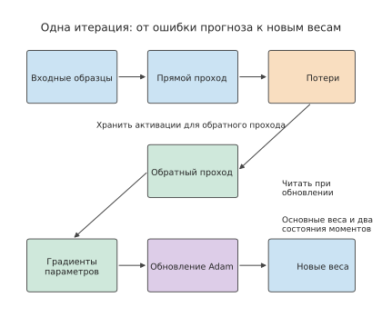
Рисунок 10-1. Из входных данных и текущих весов прямой проход получает функцию потерь, обратный проход — градиенты параметров, а Adam создаёт новые веса. Сохранённые на этапе прямого прохода активации используются при обратном проходе; процесс обновления также считывает высокоточные основные веса и историю градиентов.
В частности, в задаче этой главы Adam со смешанной точностью выполняет матричные операции с весами BF16, хранит вычисленные оптимизатором значения параметров в виде основных весов FP32 и сохраняет два состояния моментов FP32. Первый и второй моменты сохраняются между итерациями и содержат историю соответственно направлений и величин градиентов; после обновления основные веса преобразуются в BF16 для использования в матричных операциях. Градиенты накапливаются в BF16. В сумме получается 16 байт на параметр.
| Состояние | Число байтов на параметр | Объём для Qwen3-8B, GB | Когда используется |
|---|---|---|---|
| Веса модели BF16 | 2 | 16,4 | Матричные операции прямого и обратного проходов |
| Градиенты BF16 | 2 | 16,4 | Создаются при обратном проходе и используются при вычислении новых параметров |
| Основные веса FP32 | 4 | 32,8 | Хранят новые параметры, после чего из них создаётся копия BF16 |
| Первый момент Adam | 4 | 32,8 | Сохраняет историю градиентов между итерациями обучения |
| Второй момент Adam | 4 | 32,8 | Сохраняет историю квадратов градиентов между итерациями обучения |
| Итого | 16 | 131,1 | Постоянное состояние обучения |
Qwen3-8B содержит \(N=8\,190\,735\,360\) параметров, поэтому
Формат градиентов — ещё один параметр выбора. При переходе на градиенты FP32 к каждому параметру добавляются 2 байта, а общий объём возрастает до 18 байт. Это изменение обусловлено форматом данных градиента; термин «смешанная точность» сам по себе не определяет формат градиента. В MoE маршрутизатор каждый раз выбирает для выполнения часть экспертных подсетей; у каждого эксперта также есть обновляемые параметры и история оптимизатора, поэтому объём состояния определяется общим числом всех обучаемых параметров.8
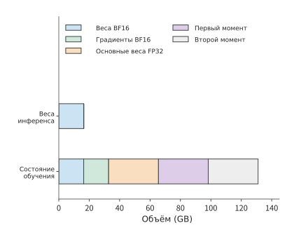
Рисунок 10-2. Совокупный объём пяти типов состояния обучения эквивалентен объёму восьми копий весов BF16. Используется модель Qwen3-8B и форматы данных из таблицы; горизонтальная ось показывает накопленный объём, занимаемый различными типами состояния.
Помимо объёма каждого типа данных, необходимо учитывать, как долго их требуется хранить. Активации, созданные при прямом проходе, можно освободить только после завершения соответствующих вычислений обратного прохода, тогда как буфер сбора параметров может использоваться лишь во время выполнения определённого модуля. Пиковое потребление видеопамяти на \(i\)-м GPU зависит от одновременно находящихся в памяти состояния обучения, активаций и временных буферов:
Например, если 8 GiB активаций и буфер сбора размером 4 GiB существуют одновременно, вместе они занимают 12 GiB; если сначала освободить активации, а затем собрать параметры, один и тот же участок памяти можно использовать повторно. Поэтому оптимизация объёма ведётся в двух направлениях: уменьшение размеров тензоров и буферов либо сокращение объёма данных, которые требуется хранить одновременно. Рассматриваемые в следующем разделе шардирование, повторные вычисления и выгрузка изменяют пиковое потребление памяти соответственно по этим двум направлениям.
Приведённые выше объёмы рассчитаны для выполнения матричных операций в BF16. При выборе другого формата с плавающей точкой одновременно изменяются число байтов, занимаемых состоянием, и численные риски. Сначала рассмотрим FP16. В разделе 4.6.1 уже сравнивались экспонента и мантисса FP16 и BF16: пятибитная экспонента FP16 задаёт минимальное нормальное число на уровне \(2^{-14}\approx6.1\times10^{-5}\); меньшие значения можно представить только как субнормальные числа, причём по мере уменьшения значения постепенно теряются значащие разряды, а значения меньше \(2^{-24}\approx6\times10^{-8}\) напрямую превращаются в ноль. В статье об обучении со смешанной точностью приведены две группы статистических данных: среди градиентов весов модели распознавания речи на путунхуа около 5% значений имели экспоненту меньше \(-24\) и в FP16 превращались в ноль; этим авторы обосновали необходимость основных весов FP32. В градиентах активаций сети обнаружения Multibox SSD множество значений также оказывалось ниже представимого диапазона FP16 и превращалось в ноль, причём значения из диапазона \([2^{-27},2^{-24})\) всё ещё были важны для обучения.
Масштабирование функции потерь (loss scaling) решает эту проблему: перед обратным проходом функция потерь умножается на коэффициент \(S\), вследствие чего градиенты также увеличиваются в \(S\) раз и попадают в представимый диапазон FP16; перед обновлением параметров они снова делятся на \(S\). При обучении различных сетей в указанной статье использовались коэффициенты масштабирования от 8 до 32K. Если коэффициент слишком мал, по-прежнему возникает андерфлоу малых градиентов; если слишком велик, большие градиенты переполняются до бесконечности, поэтому такое обновление необходимо пропустить и уменьшить коэффициент.3
В BF16 используется восьмибитная экспонента, как и в FP32, поэтому диапазоны представимых значений у них совпадают и масштабировать градиенты не требуется. Это одна из причин, по которым в приведённой выше таблице состояний используется BF16. Цена этого решения — мантисса длиной всего семь бит: ошибка округления входных данных матричных операций больше, чем у FP16, поэтому точность длинных скалярных произведений необходимо обеспечивать аккумуляторами FP32.
При дальнейшем сокращении разрядности единый глобальный коэффициент масштабирования приходится заменять блочным масштабированием. Кодировка E4M3 формата FP8 содержит только четыре бита экспоненты и три бита мантиссы, а её максимальное нормальное число равно 448, поэтому единый глобальный коэффициент не позволяет одновременно поместить активации всех слоёв в столь узкий диапазон. При обучении DeepSeek-V3 в FP8 масштабирование выполняется по блокам: для активаций scale вычисляется по малым блокам \(1\times128\) — для каждого токена и каждых 128 каналов, — а для весов по блокам \(128\times128\); после накопления каждых 128 элементов матричный блок преобразует частичную сумму в FP32 и продолжает накопление. По сравнению с контрольным обучением в BF16 относительная ошибка функции потерь составила менее 0,25%.3
FP8 также изменяет расчёт объёма, но только для копии весов, подаваемой в матричный блок: при обучении DeepSeek-V3 в FP8 операнды матричных операций преобразуются в FP8, тогда как основные веса, градиенты и состояния оптимизатора по-прежнему хранятся с более высокой точностью. Эта копия операндов FP8 занимает 1 байт на параметр, а к каждому блоку \(128\times128\) добавляется один scale FP32, что в сумме составляет приблизительно \(1+4/16384\approx1.0002\) байта на параметр. Для Qwen3-8B объём весов, считываемых при матричных операциях, сокращается с 16,4 GB в BF16 примерно до 8,2 GB, однако постоянное состояние обучения размером 16 байт на параметр из приведённой выше таблицы не сокращается из-за этого до 1 байта.
| Формат весов для матричных операций | Байтов на параметр с учётом scale | Веса, считываемые при матричных операциях Qwen3-8B | Управление масштабированием | Основные численные риски |
|---|---|---|---|---|
| FP16 | 2 | 16,4 GB | Глобальное масштабирование функции потерь | Андерфлоу градиентов, переполнение при масштабировании |
| BF16 | 2 | 16,4 GB | Не требуется | Короткая мантисса, компенсируется накоплением в FP32 |
| Копия операндов FP8 (E4M3) | Около 1,0002 | Около 8,2 GB (основные веса и состояния оптимизатора хранятся отдельно) | Блочное масштабирование и периодическое накопление с высокой точностью | Округление внутри блока, устаревание scale |
Чем ниже точность и крупнее гранулярность масштабирования, тем больше экономия памяти, но тем выше риск численного отклонения от высокоточного эталона. Независимо от того, вызвано ли отклонение обучения сбоем масштабирования, аномалией данных или аппаратной ошибкой, оно проявляется в виде всплеска на кривой функции потерь (loss spike); обычно в таком случае выполняют откат к предыдущему чекпойнту и повторяют обучение. Объём прогресса, теряемого при откате, определяется моделью интервалов сохранения из раздела 10.4, а в разделе 10.4.5 частота откатов будет включена в эту модель.
10.1.3 Требования к вычислениям, MFU и нижняя граница ресурсов¶
Видеопамять определяет, можно ли начать обучение модели, а скорость вычислений — можно ли завершить его в срок. Состояние одной модели можно распределить между несколькими GPU, однако необходимое число GPU также следует определять по общему объёму вычислений и сроку выполнения. Матричные вычисления прямого и обратного проходов для одной последовательности длиной 8 192 токена требуют приблизительно \(4.31\times10^{14}\) FLOPs, в среднем около 52,7 GFLOPs на токен. Для обработки 100B токенов суммарно потребуется около \(5.27\times10^{21}\) FLOPs. Этот объём работы получен суммированием операций прямого и обратного проходов с учётом форм матриц модели.9
Сначала предположим, что все 30 дней полностью отведены на вычисления обучения. Пиковая производительность H100 SXM в плотных матричных операциях BF16 равна 989 TFLOP/s; при достижении 40% от пика один GPU способен обрабатывать около 7 500 токенов/с. Пять GPU вместе обеспечивают около 37 600 токенов/с, что меньше требуемых для завершения за 30 дней примерно 38 600 токенов/с; для удовлетворения вычислительных требований необходимо не менее шести GPU. Для сравнения, двух GPU с 80 GB уже достаточно, чтобы вместить идеально равномерно распределённое постоянное состояние обучения объёмом 131,1 GB, однако вычисления займут около 77 дней.
Пусть общий объём вычислений алгоритма равен \(F\), число GPU — \(p\), пиковая производительность одного GPU — \(P\), а средняя вычислительная эффективность за рассматриваемый период — \(\eta\). Тогда
В этой главе MFU вычисляется согласно определению из раздела 1.2.2, а в знаменателе используется суммарная пиковая вычислительная производительность всех GPU. Если в качестве фактического времени брать полную длительность итерации обучения, ожидание коммуникаций уже будет учтено; если учитывать только время выполнения вычислений ускорителем, результатом будет вычислительная эффективность одного GPU. В проектном примере этой главы используется второе разложение: вычислительная эффективность одного GPU принимается равной 40%, после чего отдельно добавляются время коммуникаций, которое невозможно перекрыть вычислениями внутри GPU, и время ожидания входных данных. Это позволяет непосредственно наблюдать влияние каждого системного решения на время завершения. Значение 40% взято из опубликованных данных Llama 3: модель 405B предварительно обучалась на 8 192–16 384 GPU H100 и достигала MFU BF16 от 38% до 43%. Эти значения рассчитаны по полной длительности шага и уже включают ожидание коммуникаций; поскольку в этой главе коммуникации добавляются ещё раз отдельно, рассчитанное время завершения оказывается завышенным. У RTX 4090 нет NVLink, поэтому все данные между GPU передаются через PCIe; соответствующие затраты рассчитываются отдельно в разделе 10.3.3 по характеристикам фактических соединений. На рисунках 10-3–10-5 также показаны уровни 30% и 50%, позволяющие оценить изменение необходимого числа GPU при отклонении эффективности.9
Куда расходуются остальные 60% пиковой вычислительной производительности, последовательно объясняется в разделах этой главы: коммуникации, которые невозможно перекрыть вычислениями (раздел 10.3.3), пузыри конвейера (раздел 10.3.2), ограниченные пропускной способностью памяти обновление параметров и преобразование состояний (раздел 10.2.3), повторные вычисления (раздел 10.2.2), отстающие исполнители (раздел 10.4.5) и сохранение чекпойнтов (раздел 10.4.3). Согласно критерию из раздела 1.3.4, первые четыре пункта представляют работу, которую необходимо учитывать в модели; если пропустить любой из них, оценка времени завершения окажется заниженной. Последние два пункта и неперекрываемая часть коммуникаций содержат издержки, которые можно сократить, — именно они образуют пространство для оптимизации системного проекта.
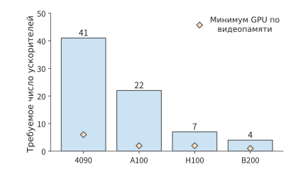
Рисунок 10-3. Число GPU, необходимое при эффективности матричных вычислений 30%. Задача состоит в обработке моделью Qwen3-8B 100B токенов с длиной последовательности 8192; все 30 дней отведены на выполнение. Синие столбцы показывают вычислительные требования, оранжевые ромбы — нижнюю границу объёма состояния обучения. Для A100 используется вариант SXM с 80 GB, для H100 — вариант SXM.
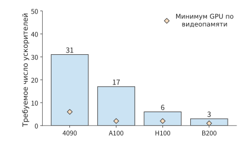
Рисунок 10-4. При повышении эффективности матричных вычислений до 40% число GPU, необходимое для той же задачи, уменьшается; оранжевые ромбы по-прежнему обозначают нижнюю границу объёма состояния. Все нижние границы выражены числом GPU; показатель объёма — это минимальное число GPU, необходимое для выполнения ограничения по видеопамяти.
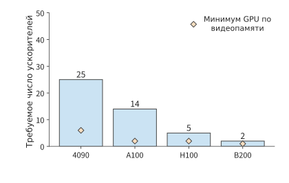
Рисунок 10-5. Число GPU, необходимое при эффективности матричных вычислений 50%. На всех трёх рисунках используются одинаковые порядок моделей, диапазон вертикальной оси, задача и срок выполнения 30 дней. Все нижние границы выражены числом GPU; показатель объёма — это минимальное число GPU, необходимое для выполнения ограничения по видеопамяти.
На рисунке 10-3 нижние границы по видеопамяти и вычислительной производительности показаны вместе: для задачи этой главы необходимое число GPU в основном определяется вычислениями. Исходя из этого, далее выбираются две конкретные конфигурации для поэтапного сравнения в последующих разделах. Соответствующая пиковая производительность RTX 4090 равна 165,2 TFLOP/s. При эффективности 40% и сроке вычислений 30 дней требуется не менее 31 GPU. Если использовать конфигурацию с восемью GPU на хост, сначала можно рассмотреть вариант с 32 GPU; добавление ещё двух хостов даёт 48 GPU. В этих двух вариантах каждый GPU накапливает соответственно 12 и 8 микробатчей по одной последовательности, совместно формируя глобальный батч из 384 последовательностей. Увеличение числа GPU изменяет распределение работы, но цель обучения остаётся прежней.
Каждая итерация обучения требует около \(1.66\times10^{17}\) FLOPs. При использовании 32 GPU выполнение приходящейся на каждый GPU части вычислений занимает около 78,3 с, а при использовании 48 GPU — около 52,2 с. По сравнению с бюджетом 67,9 с вариант с 32 GPU превышает лимит ещё до добавления коммуникаций, тогда как вариант с 48 GPU оставляет около 15,7 с. Далее необходимо определить, как в этих двух вариантах разместить состояние и какие ожидания израсходуют эти 15,7 с.
10.2 Шардирование, повторное вычисление и выгрузка состояния обучения¶
10.2.1 Параллелизм данных и шардирование состояния в ZeRO/FSDP¶
В главе 6 шесть способов распараллеливания были введены через разбиение по примерам, признакам, позициям последовательности, слоям и экспертам. Здесь мы переходим к обучению и рассматриваем шардирование состояния внутри реплик параллелизма данных. FSDP (Fully Sharded Data Parallel, полностью шардированный параллелизм данных) распределяет между процессами (rank) параметры, градиенты и состояние оптимизатора; параметры слоя временно собираются перед вычислением, а после обратного прохода градиенты распределяются по шардам. FSDP прежде всего уменьшает объём памяти и дублирование состояния обучения и обычно сочетается с DP, TP и PP.
SP (Sequence Parallel, параллелизм по последовательности) распределяет позиции одной и той же входной последовательности и главным образом применяется к операциям над отдельными токенами, таким как LayerNorm и Dropout, внутри группы TP. Перед матричным умножением, которому нужны полные строки токенов, карты собирают вход, а после вычисления снова разделяют результат по позициям. FSDP управляет владением состоянием модели, а SP — рабочим размещением промежуточных активаций; объекты разбиения, моменты коммуникаций и области применения у них различаются. На рисунке 1 статьи о Nested BSP FSDP выделен в отдельный уровень: шардирование состояния обучения и шардирование активаций выполнения относятся к разным осям параллелизма.1
Распределение состояния между несколькими GPU определяется способом распараллеливания. При синхронном параллелизме данных каждый GPU обрабатывает разные примеры, после чего обновляет свою копию параметров с помощью редуцированных градиентов. Новые параметры на всех GPU одинаковы, поэтому каждый GPU обычно хранит полную копию весов и состояния оптимизатора; чем больше GPU, тем больше копий состояния. ZeRO был предложен исследователями Microsoft в 2019 году и опубликован в 2020 году. Он уменьшает число дублирующихся копий состояния при обучении крупных моделей за счёт шардирования между GPU. ZeRO поэтапно распределяет ответственность за это состояние: каждый GPU обновляет только часть параметров, а остальные GPU получают необходимые для выполнения данные посредством коммуникации.
Полностью шардированный параллелизм данных (Fully Sharded Data Parallel, FSDP) организует выполнение по тому же принципу шардирования: параметры, градиенты и состояние оптимизатора хранятся в виде шардов. Ниже принадлежность состояния пошагово изменяется на примере четырёх GPU, после чего анализируется соответствующий способ выполнения. Каждый столбец на рисунках всегда соответствует одному и тому же GPU; «полностью» означает, что GPU хранит всё состояние, а «шард» — только четверть, за которую он отвечает.
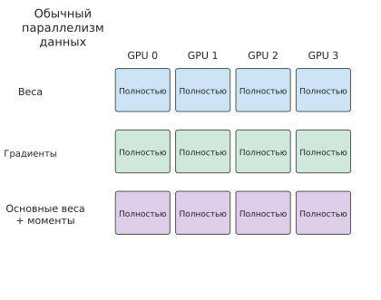
Рисунок 10-6. Обычный DP: каждый GPU хранит полную копию весов, градиентов, основных весов и двух состояний моментов.
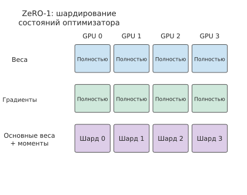
Рисунок 10-7. ZeRO-1: основные веса и два состояния моментов шардируются по параметрам, а веса и градиенты по-прежнему полностью копируются.
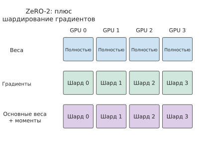
Рисунок 10-8. ZeRO-2: градиенты также разделяются, и каждый GPU хранит только принадлежащий ему шард градиентов.
На первых двух этапах каждый GPU по-прежнему хранит полные веса модели. На рисунке 10-9 шардируются и веса, что дополнительно уменьшает объём постоянно размещённых данных, но перед выполнением каждого модуля необходимые веса приходится получать посредством коммуникации.
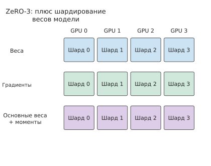
Рисунок 10-9. ZeRO-3: веса также шардируются. При выполнении модуля каждый GPU получает необходимые полные веса посредством коммуникации.
Пусть группа параллелизма данных содержит \(d\) GPU. Если сначала рассматривать постоянно размещённое состояние обучения, объём на один GPU для обычного параллелизма данных и трёх этапов ZeRO соответственно равен
На первом этапе шардируются основные веса FP32 и два состояния Adam — всего 12 байт на параметр, тогда как веса и градиенты по-прежнему хранятся по одной полной копии. На втором этапе шардируются также градиенты, и полностью скопированными остаются только веса BF16. На третьем этапе шардируются и веса. Подставив \(d=8\), получаем следующее изменение объёма.
| Конфигурация | Постоянно размещённое состояние обучения на GPU / GiB | Полностью копируемое состояние обучения |
|---|---|---|
| Обычный DP | 122.1 | Веса, градиенты и состояние оптимизатора |
| ZeRO-1 | 42.0 | Веса и градиенты |
| ZeRO-2 | 28.6 | Веса |
| ZeRO-3 | 15.3 | Всё постоянно размещённое состояние обучения шардировано |
После шардирования каждый модуль выполняется в следующем порядке: сначала необходимые параметры собираются с помощью AllGather, затем выполняется прямой или обратный проход, после чего ReduceScatter агрегирует градиенты и распределяет их шарды так, чтобы отвечающий за каждый шард GPU получил все вклады в градиент, и наконец каждый GPU обновляет закреплённые за ним параметры. Полностью шардированное выполнение FSDP также строится вокруг этой последовательности. Если после прямого прохода полные параметры освобождаются, перед обратным проходом их необходимо собрать повторно. Если их сохранить, обратный проход сможет использовать их напрямую, но полные параметры будут занимать видеопамять одновременно с активациями последующих модулей.
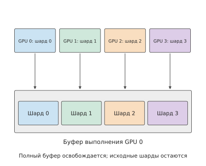
Рисунок 10-10. В обычном состоянии веса одного модуля распределены между четырьмя GPU; во время выполнения каждый GPU собирает полные веса. На рисунке подробно показан процесс сборки на GPU 0, а четыре цвета обозначают четыре шарда параметров. Буфер полных весов можно освободить сразу после использования, при этом исходные шарды, постоянно хранящиеся на каждом GPU, сохраняются.
На рисунке 10-10 буфер полных весов существует одновременно с исходными шардами. Увеличение числа GPU уменьшает каждый исходный шард, однако размер буфера полных весов определяется самим модулем. Поэтому объём постоянно размещённого состояния и пиковое потребление памяти уменьшаются в разной степени.
Эту разницу можно непосредственно наблюдать в небольшом эксперименте. В эксперименте с небольшой CPU-моделью на реализации FSDP второго поколения в PyTorch (FSDP2) число участвующих процессов увеличили с двух до четырёх: сохраняемое после обновления параметров состояние уменьшилось примерно с 18 MiB до 9 MiB, тогда как пик при выполнении снизился лишь примерно с 39 MiB до 30 MiB. Постоянно хранимая часть сократилась вдвое, а пик — лишь примерно на 23%, поскольку во время выполнения всё ещё требовалось около 21 MiB для других тензоров и буферов. Следовательно, при анализе требований к памяти после шардирования необходимо также учитывать, как долго во время выполнения модуля требуется хранить параметры и активации.10
10.2.2 Сохранение активаций и выборочное повторное вычисление¶
Активации, оставшиеся после прямого прохода, подобны промежуточным шагам, записанным на черновике: когда обратный проход возвращается к этому слою, некоторые из этих значений снова понадобятся. Хранить весь черновик удобно, но он занимает место; если сохранить только часть шагов, недостающие значения придётся повторно вычислить перед использованием. Шардирование параметров уже уменьшило дублирование весов и состояния оптимизатора, а повторное вычисление активаций обменивает дополнительные вычисления на память, необходимую для хранения этих промежуточных значений.
Рассмотрим матричную операцию \(Y=XW\), где \(X\) — вход, \(W\) — веса, а \(Y\) — выход. После завершения прямого прохода \(X\) потребуется при вычислении градиента весов. Обозначим функцию потерь через \(\mathcal L\); \(dY=\partial\mathcal L/\partial Y\) — градиент, полученный от последующих вычислений, а \(dX\) и \(dW\) — соответственно градиенты функции потерь по входу и весам; верхний индекс \(\mathsf T\) обозначает транспонирование матрицы. При обратном проходе необходимо вычислить
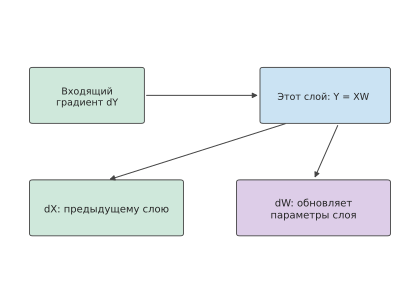
Рисунок 10-11. Обратный проход матричной операции создаёт две ветви градиентов: dX передаётся предыдущему слою для продолжения обратного прохода, а dW — для редукции и обновления параметров текущего слоя. Обе ветви вычислений читают входящий градиент dY.
Для вычисления градиента параметров требуется вход прямого прохода \(X\). Если сохранить \(X\), он должен оставаться в памяти с момента прямого прохода до завершения его использования при обратном проходе. Если освободить \(X\), перед использованием при обратном проходе соответствующую часть прямого прохода придётся повторить, начиная с сохранённого входа или промежуточного результата. Выбор сохраняемых и повторно вычисляемых значений зависит от объёма сэкономленной памяти и объёма работы, необходимой для повторного вычисления.
Пример: сколько памяти активаций можно сэкономить, повторно вычислив вентильное произведение перед обратным распространением? Многослойный перцептрон Qwen3-8B (MLP, то есть подслой прямой связи в этом примере) сначала получает результат вентиля \(a\) и результат восходящей проекции \(u\), затем формирует \(h=a\odot u\) и наконец вычисляет \(Y=hW_{\mathrm{down}}\). Для градиента параметров нисходящей проекции требуется \(h\). Если \(a,u\) уже сохранены для обратного прохода нелинейного оператора, перед обратным проходом нисходящей проекции их можно снова перемножить, не сохраняя \(h\) всё это время.
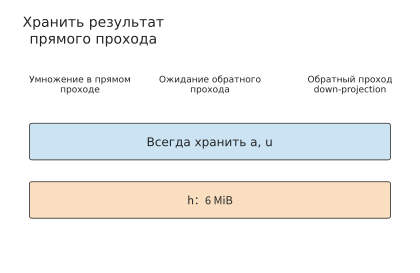
Рисунок 10-12. Сохранение произведения h: синие полосы обозначают постоянно сохраняемые a, u, а оранжевая полоса — произведение h, которое хранится от прямого прохода до обратного прохода нисходящей проекции. Для micro-batch из 128 токенов используется FP32; форма h равна [128,12288], а объём — 6 MiB.
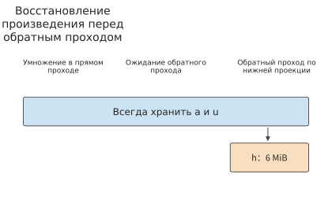
Рисунок 10-13. Сохраняются a, u, а перед использованием при обратном проходе они повторно перемножаются для получения h. Оранжевый буфер объёмом 6 MiB существует лишь непродолжительное время непосредственно до и после использования; горизонтальная ось обозначает порядок операций.
После перехода к восстановлению достаточно сгенерировать h непосредственно перед началом обратного прохода нисходящей проекции и хранить его до завершения этого этапа вычислений. Размер буфера рассчитывается следующим образом: для micro-batch из 128 токенов и активаций FP32 форма \(h\) равна \([128,12288]\), поэтому он занимает \(128\times12288\times4=6\) MiB; для восстановления требуется около 1,57 миллиона умножений. Два взвешенных выхода нормализации в том же слое имеют форму \([128,4096]\) и занимают по 2 MiB; их также можно восстановить из сохранённых результатов нормализации и весов. Таким образом, на каждом слое экономится \(6+2+2=10\) MiB, а на состоящей из девяти слоёв стадии конвейера для каждого micro-batch экономится 90 MiB, или около 94 MB.
В исходной схеме входы, сохраняемые для этих GEMM, суммарно занимают 15 MiB на слой: 10 MiB приходится на три указанных произведения, а оставшиеся 5 MiB — на Q, K, V и выход внимания. Поэтому для стадии из девяти слоёв объём уменьшается со 135 MiB до 45 MiB, то есть примерно со 142 MB до 47 MB. Восстановление выполняется последовательно по слоям, а наибольшая рабочая область для произведения занимает 6 MiB; после завершения работы предыдущего слоя следующий повторно использует ту же область.11
Если четыре micro-batch одновременно ожидают обратного прохода, объём данных, которые требуется хранить длительное время, уменьшается на \(4\times90=360\) MiB, или примерно на 377 MB, а во время обратного прохода восстановление выполняется поочерёдно для каждого micro-batch. Выигрыш здесь обусловлен различием жизненных циклов данных: чем больше micro-batch ожидают обратного прохода, тем больше данных необходимо хранить длительное время; при послойном восстановлении достаточно многократно использовать одну и ту же рабочую область. Если расписание конвейера позволяет раньше начать обратный проход, число ожидающих его micro-batch также уменьшается. Следовательно, повторное вычисление и расписание конвейера совместно определяют объём сохраняемых данных, а влияние дополнительных вычислений на продолжительность шага обучения зависит от их положения на временной шкале.
10.2.3 Выгрузка между CPU и GPU и время использования буферов¶
Если затраты на восстановление данных из сохранённых результатов невелики, подходит повторное вычисление. Другой способ — сохранить сами данные, переместив их в более объёмную память хоста, а перед использованием вернуть на GPU. Это называется выгрузкой. При использовании выгрузки исходная проблема нехватки видеопамяти превращается в вопрос о том, успеет ли завершиться передача данных. Пусть объём состояния равен \(V\), эффективная пропускная способность соединения — \(B\), а между моментом, когда передачу можно начать, и моментом, когда данные понадобятся оператору, имеется \(W\) секунд. Тогда время передачи, выходящее за пределы этого интервала, равно
и соответствующему оператору придётся ожидать в течение этого времени. Степень перекрытия передачи и вычислений зависит от того, когда данные становятся доступны для отправки, когда освобождается соединение и когда эти данные требуются соответствующему оператору. При DMA перемещение данных инициируется устройством, и исходные данные должны сохраняться на протяжении передачи. Исходный буфер должен оставаться действительным до завершения DMA, а целевой буфер занимает память уже с момента начала приёма; таким образом, выгрузка изменяет время использования буферов на обеих сторонах.
Пример: где преобразовать градиенты для более быстрой выгрузки — на CPU или GPU? Градиент вентильной проекции имеет форму \([12288,4096]\) и размер \(G=96\) MiB в BF16 или 192 MiB в FP32. CPUAdam — реализация обновления Adam на CPU, использующая градиенты FP32. Можно сначала передать BF16, а затем выполнить преобразование на CPU, либо сначала преобразовать данные на GPU и передать FP32. В обоих случаях преобразование должно прочитать \(G\) и записать \(2G\), то есть суммарно обратиться к \(3G\) байт. Преобразование ограничено пропускной способностью памяти: для GPU используется показатель RTX 4090, равный 1008 GB/s, а для CPU — 307.2 GB/s для одного сокета Xeon четвёртого поколения с восемью каналами DDR5-4800. Обозначим пропускную способность преобразования на CPU и GPU через \(C_c,C_g\), а эффективную пропускную способность соединения — через \(B\). Тогда время последовательного выполнения путей равно
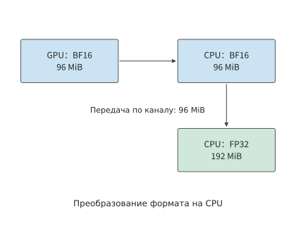
Рисунок 10-14. Сначала градиент BF16 объёмом 96 MiB передаётся на CPU, а затем преобразуется на CPU в FP32 объёмом 192 MiB. Стрелки обозначают поток данных; входные и выходные данные преобразования находятся на стороне CPU.
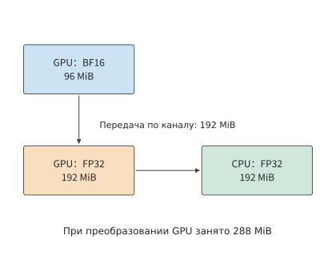
Рисунок 10-15. Сначала градиент BF16 объёмом 96 MiB преобразуется на GPU в FP32 объёмом 192 MiB, а затем передаётся на CPU. Во время преобразования входные и выходные данные существуют одновременно, поэтому пиковое потребление памяти GPU составляет 288 MiB.
Различие между рисунками 10-14 и 10-15 сосредоточено в стрелках, пересекающих соединение: хотя преобразование на GPU выполняется быстрее, по соединению приходится дополнительно передать 96 MiB. Чем медленнее соединение, тем вероятнее эта дополнительная передача сведёт на нет выигрыш от преобразования.
RTX 4090 подключается к хосту через PCIe 4.0 x16 с пропускной способностью 32 GB/s в каждом направлении. Для этого соединения время пути через CPU составляет примерно \(3.15+0.98=4.13\) ms, а пути через GPU — примерно \(0.30+6.29=6.59\) ms. Преобразование на пути через GPU быстрее примерно на 0.68 ms, однако передача занимает примерно на 3.15 ms больше, поэтому весь путь оказывается медленнее. Если вместо этого используется NVLink-C2C между CPU и GPU в GH200 с пропускной способностью 450 GB/s в каждом направлении, передача дополнительных 96 MiB увеличивает время лишь примерно на 0.22 ms. Время двух путей становится равным примерно 1.21 ms и 0.75 ms, поэтому преобразование на GPU даёт заметный выигрыш.12
Приравняв время выполнения двух путей, можно найти пороговую пропускную способность, при которой меняется соотношение их скоростей:
Этот порог выражает в одном масштабе два противоположных эффекта: более быстрое преобразование на GPU сокращает время изменения формата, но больший объём данных FP32 увеличивает время передачи. Чем быстрее соединение, тем меньше цена второго эффекта. 147 GB/s превышает пропускную способность PCIe 5.0 x16, равную 64 GB/s в каждом направлении, поэтому в этом примере для всех подключённых через PCIe GPU следует сначала передавать BF16, а затем преобразовывать данные на CPU.
Ёмкость видеопамяти накладывает ещё одно ограничение. Во время преобразования на GPU исходные 96 MiB и выходные 192 MiB существуют одновременно, поэтому пиковое потребление составляет 288 MiB. При передаче BF16 на CPU достаточно сохранить на GPU только участвующий в текущем преобразовании градиент объёмом 96 MiB. Для преобразования на GPU требуется дополнительный буфер объёмом 192 MiB. SuperOffload — система выгрузки при обучении, предназначенная для тесно интегрированных CPU и GPU, таких как GH200. Она совместно планирует место преобразования и выполнение оптимизатора на хосте, используя именно компромисс между скоростью преобразования, объёмом передаваемых данных и временем использования буферов. Выигрыш для всего шага определяется тем, когда завершатся обработка последнего буфера градиентов, обновление параметров на CPU и обратная передача весов.
10.2.4 Распределение состояния по GPU и топология соединений в комбинированных схемах параллелизма¶
Шардирование, повторное вычисление и выгрузка изменяют соответственно объём хранения, объём вычислений и объём передачи данных. При объединении этих методов в целостную систему необходимо также определить, к каким GPU и коммуникационным группам они применяются. Рассмотренные в главах 6 и 7 методы параллелизма разделяют при обучении различные данные и вычисления: TP разделяет матрицы внутри слоя, PP — слои, DP — примеры, а EP — экспертов. Сводная таблица в разделе 6.1.4 также включает SP и CP: первый шардирует активации операторов, обрабатывающих отдельные токены, вдоль последовательности и обычно повторно использует группу тензорного параллелизма; второй распределяет контекст внимания одной длинной последовательности между несколькими GPU, сохраняя зависимости между позициями. Эти методы параллелизма продолжают подход «разделение на блоки — распределение входов — объединение результатов» из главы 5, а при обучении градиенты распространяются в обратном направлении по тому же графу вычислений. Если сначала определить, кто обновляет каждую часть параметров, а затем в соответствии с зависимостями прямого и обратного проходов организовать сбор, обмен и редукцию, можно одновременно получить объём памяти на каждом GPU и объём трафика на каждом интерфейсе.
Три способа оптимизации ёмкости можно сравнить с помощью одного набора вопросов.
| Метод | Сокращаемое потребление видеопамяти | Дополнительная работа | Временная зависимость, определяющая выигрыш |
|---|---|---|---|
| Шардирование состояния | Дублируемые веса, градиенты или состояние оптимизатора | Сбор параметров, редукция и шардирование градиентов | Успевает ли завершиться сбор до выполнения модуля |
| Повторное вычисление активаций | Промежуточные значения, сохраняемые между прямым и обратным проходами | Восстановление значений прямого прохода | Задерживает ли восстановление обратный проход на критическом пути |
| Выгрузка состояния | Временно неиспользуемое состояние на ускорителе | Передача между хостом и ускорителем | Успевают ли данные вернуться до использования |
Пример: если видеопамяти недостаточно, следует увеличить число GPU для шардирования или повторно вычислять активации? Номинальный объём памяти RTX 4090 составляет 24 GB, или около 22.35 GiB; за вычетом потребления среды выполнения будем считать доступными 22 GiB на GPU. При использовании Qwen3-8B с ZeRO-3 на восьми GPU каждый GPU хранит около 15.3 GiB, и для остальных тензоров и буферов остаётся около 6.7 GiB. Если активациям и временным буферам одновременно требуется 10 GiB, общий объём составит около 25.3 GiB, что превышает доступный примерно на 3.3 GiB. Эти 3.3 GiB можно сэкономить с помощью повторного вычисления либо увеличить число GPU до шестнадцати, уменьшив постоянно размещённое состояние обучения примерно до 7.6 GiB, а общий объём — примерно до 17.6 GiB.
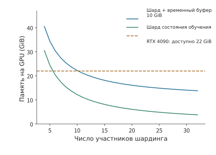
Рисунок 10-16. При заданной дополнительной потребности в памяти число шардов определяет, какие варианты удовлетворяют требованиям по ёмкости. Кривая соответствует \(16N/d+10\) GiB, а горизонтальная линия — доступной видеопамяти RTX 4090 объёмом 22 GiB на GPU. В области, где кривая находится ниже бюджета, помещаются указанное состояние обучения и буферы; расстояние по вертикали показывает запас ёмкости.
Эти два варианта имеют разную цену: схема на восьми GPU добавляет вычисления для восстановления, а схема на шестнадцати GPU увеличивает число GPU и изменяет коммуникационную группу. Сначала на рисунке можно найти варианты, удовлетворяющие требованиям по видеопамяти, а затем сравнить время выполнения шага для этих вариантов.
Для рассматриваемой в этой главе задачи обучения схемы на 32 и 48 GPU используют ZeRO-3 для всей группы, TP=PP=1, а micro-batch на каждом GPU состоит из одной последовательности. Как и в предыдущем примере, доступная видеопамять принимается равной 22 GiB на GPU, а для одновременно хранимых активаций, полных параметров модуля и рабочей области устанавливается предел в 10 GiB. Постоянно размещённое состояние обучения в двух схемах составляет соответственно около 3.8 и 2.5 GiB, общий объём — около 13.8 и 12.5 GiB, а запас ёмкости — около 8.2 и 9.5 GiB. Видеопамяти достаточно в обеих схемах, поэтому далее главным критерием сравнения становится время завершения.28
10.3 Конвейерное планирование шага обучения и перекрытие коммуникаций¶
Анализ ёмкости определяет, способна ли видеопамять вместить необходимые данные, а анализ времени — успеют ли эти данные поступить. В этом разделе сначала определяется целевая функция, оптимизируемая за одну итерацию обучения, а затем прямой проход, обратный проход и коммуникации размещаются на одной временной шкале. В рассматриваемом в этой главе проектном примере используется параллелизм по данным; четырёхстадийный конвейер рассматривается отдельно, чтобы показать, как планирование одновременно изменяет критический путь и жизненный цикл активаций.
10.3.1 Micro-batch, накопление градиентов и обновление параметров¶
Глобальный batch содержит все образцы, используемые для одного обновления параметров. Его можно разделить на несколько micro-batch, последовательно выполнить для них обратное распространение, накопить градиенты и затем один раз обновить параметры. Пусть \(S_k\) — множество индексов действительных токенов в micro-batch \(k\), общее число действительных токенов равно \(L=\sum_k|S_k|\), тогда средняя по токенам функция потерь имеет вид
Суммирование и дифференцирование можно переставить местами, поэтому обратное распространение можно выполнять отдельно для каждого micro-batch; при вычислении функции потерь каждого micro-batch сумма его потерь делится на одно и то же \(L\). После завершения накопления градиентов всех micro-batch один раз выполняется обрезка градиентов и один раз — обновление параметров. Таким образом, разбиение на micro-batch изменяет только порядок выполнения, но не вес каждого токена в функции потерь.
Пример: почему усреднение по micro-batch и по токенам даёт разные градиенты? Из восьми ответов четыре содержат по два действительных токена, а ещё четыре — по три, всего 20 токенов. Пусть потеря на один токен короткого ответа равна \(\theta/5\), а длинного — \(2\theta/5\), тогда
Если сначала вычислить среднюю потерю каждого ответа, а затем усреднить её по восьми ответам, короткие и длинные ответы получат по половине общего веса, и градиент станет равен \((0.2+0.4)/2=0.30\). При исходном усреднении по токенам на длинные ответы приходится \(12/20=60\%\), поэтому результат ближе к 0.4. Если уже использован общий знаменатель 20, а после накопления результат ещё раз делится на восемь, градиент становится равен 0.04. Знаменатель определяет вклад каждого токена в градиент параметров.21
Вернёмся к проектному примеру: для 384 последовательностей полной длины из раздела 10.1.3 на каждой из 32 карт накапливаются 12 micro-batch, а на каждой из 48 карт — 8. За один раз каждая карта обрабатывает только одну последовательность, и формы матриц, обрабатываемых каждой картой, одинаковы; глобальное число действительных токенов и целевая функция также одинаковы. Сбор параметров и коммуникации градиентов отдельно размещаются на временной шкале в соответствии с путём выполнения.
10.3.2 Конвейерное планирование, пузыри и жизненный цикл активаций¶
Разбиение на micro-batch сохраняет цель обучения, но изменяет порядок вычислений. В конвейерном параллелизме этот порядок также определяет, когда каждый этап может начать вычисления и сколько наборов активаций ожидают обратного прохода. Конвейерный параллелизм делит модель на несколько этапов: каждый micro-batch последовательно проходит прямой проход, после чего градиенты распространяются в обратном направлении. При планировании fill–drain сначала для всех micro-batch полностью выполняется прямой проход, а затем централизованно выполняется обратный. При 1F1B (one forward, one backward) после прогрева конвейера чередуются один прямой и один обратный проход, благодаря чему активации более ранних micro-batch освобождаются быстрее.
Скорость освобождения активаций непосредственно определяет пиковое потребление видеопамяти. Для обратного распространения нужны активации, сохранённые во время прямого прохода, поэтому активации каждого micro-batch должны оставаться в видеопамяти с момента завершения прямого прохода до прихода соответствующего обратного прохода. Сколько micro-batch одновременно ожидают обратного прохода, столько наборов активаций и находится в видеопамяти. При fill–drain первый обратный проход начинается лишь после завершения прямого прохода всех \(m\) micro-batch, поэтому пиковое потребление линейно растёт с \(m\); если оно превышает ёмкость видеопамяти, шаг обучения выполнить невозможно и приходится уменьшать число одновременно находящихся в конвейере micro-batch, сокращать последовательность либо использовать более дорогое повторное вычисление. Раннее выполнение обратного прохода сокращает ожидание активаций: после снижения пика шаг обучения становится выполнимым, а освободившийся резерв можно использовать для увеличения micro-batch или длины последовательности. Поэтому резидентность в видеопамяти часто определяет не скорость, а саму возможность выполнения.
При сравнении любых двух вариантов планирования необходимо одновременно учитывать две оси: время завершения, зависящее от продолжительности простоя конвейера, то есть пузырей, и резидентность в видеопамяти, зависящую от того, как долго каждую активацию нужно сохранять в ожидании её обратного прохода.
Сначала предположим, что \(p\) этапов полностью сбалансированы, прямой проход каждого этапа занимает \(t_f\), обратный — \(t_b\), а время передачи данных и обновления параметров равно нулю. Для \(m\) micro-batch планирование fill–drain требует
Член \(m\) соответствует фактическим вычислениям micro-batch, а \(p-1\) возникает из-за заполнения и опустошения конвейера. Поэтому временная утилизация карт \(u\) растёт с числом micro-batch. При \(p=4,m=8\) получаем \(u=8/11\approx72.7\%\). Если глобальный batch size остаётся неизменным, увеличение числа micro-batch означает уменьшение каждого из них; сокращение времени простоя конвейера необходимо сопоставлять со временем выполнения меньших матриц.
Пример: если пузыри одинаковы, что даёт 1F1B? Разделим 36 слоёв Qwen3-8B на четыре этапа по девять слоёв, а каждый из восьми micro-batch будет содержать одну последовательность из 128 токенов. Прямой проход каждого этапа занимает 10 ms, обратный — 20 ms, каждая передача через границу — 1 ms, каналы прямого и обратного направлений независимы, а обновление параметров занимает 1 ms. Без учёта передачи данных планирование fill–drain занимает \((8+4-1)\times30=330\) ms; заполнение прямого прохода через три границы добавляет 3 ms, опустошение обратного прохода — ещё 3 ms, а обновление параметров — 1 ms, итого 337 ms.
При 1F1B обратный проход начинается раньше, поэтому последующие прямые проходы должны ожидать, пока обратный проход освободит вычислительные ресурсы. На этапе 0 прямой проход первых четырёх micro-batch завершается к 40 ms, а первый возвращаемый градиент поступает к 106 ms. Затем до 126 ms выполняется обратный проход, и лишь после этого начинается прямой проход пятого micro-batch. Такое чередование последовательно влияет на время поступления данных на следующие этапы. На этапе 3 обратный проход второго micro-batch завершается к 93 ms, однако входные данные для третьего прямого прохода поступают лишь к 95 ms, из-за чего возникает промежуток в 2 ms; последующие аналогичные ожидания продолжают удлинять критический путь. После упорядочивания выполнения в соответствии с этими зависимостями вычисление всех градиентов завершается к 346 ms, а вместе с обновлением параметров общее время составляет 347 ms.11
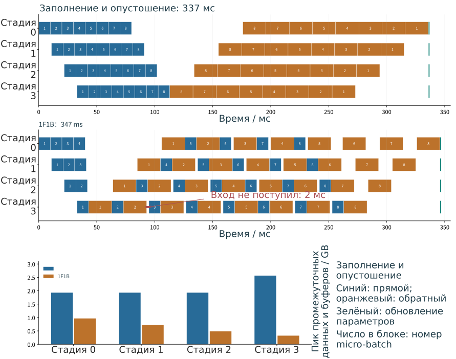
Рис. 10-17. При fill–drain сначала выполняется прямой проход восьми micro-batch, затем обратный проход и, наконец, обновление параметров. Синим обозначен прямой проход, оранжевым — обратный, зелёным — обновление параметров. Для четырёх этапов используется единая временная шкала; при указанных в тексте условиях вычислений и передачи данных общее время составляет 337 ms.
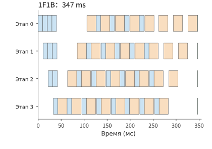
Рис. 10-18. После прогрева 1F1B чередует прямой и обратный проходы; время завершения в этом примере составляет 347 ms. Синим обозначен прямой проход, оранжевым — обратный, зелёным — обновление параметров; используется та же временная шкала, что и на предыдущем рисунке.
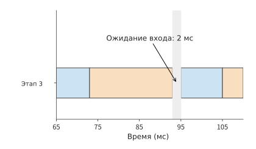
Рис. 10-19. Увеличенный фрагмент этапа 3 в 1F1B: обратный проход второго micro-batch завершается к 93 ms, а следующие входные данные прямого прохода поступают к 95 ms, создавая ожидание в 2 ms.
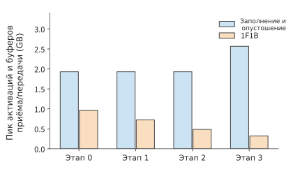
Рис. 10-20. Пиковое потребление памяти активациями и буферами приёма и передачи на каждом этапе для двух вариантов планирования. Ранний обратный проход позволяет раньше освобождать активации, снижая максимум примерно с 2.57 GB до 0.97 GB.
Сравнение рисунков показывает: оба варианта планирования выполняют одинаковую работу прямого и обратного проходов, а время пузырей в обоих случаях равно \((p-1)(t_f+t_b)\); из-за ожидания зависимостей, вносимого чередованием (рис. 10-19), 1F1B тратит примерно на 3% больше времени. Его преимущество видно на рис. 10-20: максимальное потребление видеопамяти промежуточными результатами и буферами снижается примерно с 2.57 GB до 0.97 GB, то есть приблизительно на 62%. Поэтому утверждение «1F1B лучше fill–drain» справедливо только по оси видеопамяти, тогда как по времени он, напротив, немного медленнее. Если для этих промежуточных результатов и буферов доступен только 1 GB, этот шаг обучения можно выполнить лишь при планировании с ранним обратным проходом; при достаточной ёмкости памяти fill–drain завершится раньше — за 337 ms. Выбор варианта планирования определяется одновременно тем, когда освобождаются тензоры и когда поступают следующие входные данные.
Чтобы сократить время завершения, необходимо сжать сами пузыри: чем мельче разбит обратный проход и чем больше micro-batch одновременно движется по конвейеру, тем полнее можно заполнить промежутки. Следующие три вида планирования основаны на приведённом выше анализе зависимостей и уменьшают пузыри соответственно ценой числа коммуникаций, пикового объёма активаций и числа параметров. Во всех трёх используется тот же пример: четыре этапа, прямой проход 10 ms, обратный проход 20 ms, передача через границу 1 ms и обновление параметров 1 ms. Порядок выполнения каждого micro-batch на каждом этапе, то есть порядок слотов, определяется событийной моделью, а формулы пузырей и способ разбиения обратного прохода взяты из опубликованных статей.4
Чередующийся 1F1B (interleaved 1F1B, также называемый виртуальным конвейером) делит 36 слоёв на восемь блоков, циклически распределённых между четырьмя картами. Каждая карта получает \(v=2\) несмежных блока, в сумме по-прежнему содержащих девять слоёв: первые четыре блока содержат по пять слоёв, последние четыре — по четыре; карта 0 выполняет слои 0–4 и 20–23, а остальные карты — последующие блоки по той же схеме. Поэтому прямой проход каждого micro-batch пересекает границы \(2p-1=7\) раз вместо 3, а доля пузырей уменьшается с \((p-1)/m\) до
При восьми micro-batch время завершения снижается с 347 ms до 298 ms, а простой каждой карты — примерно с 106 ms до 57 ms. Цена состоит из двух частей: число передач возрастает более чем вдвое — количество сообщений прямого прохода за весь шаг увеличивается с 24 до 56, — а активациям ранних этапов приходится ждать завершения прямого прохода большего числа блоков. Пиковый объём активаций и буферов приёма и передачи на этапе 0 возрастает с 921 MiB примерно до 1,329 MiB.
Планирование zero-bubble делит обратный проход на две части: градиент входа \(dX\) (в статье обозначен как B) необходимо передать предыдущему этапу, обратный проход которого ожидает этот градиент, поэтому \(dX\) находится на критическом пути и должен вычисляться как можно раньше; градиент весов \(dW\) (в статье обозначен как W) нужен только для накопления градиентов текущего слоя, поэтому его можно вычислить в любой момент после соответствующего \(dX\) на этом этапе и отложить до появления свободного промежутка. Пусть прямой проход, \(dX\) и \(dW\) каждого этапа занимают соответственно \(T_F\), \(T_B\) и \(T_W\). Тогда пузырь 1F1B равен \((p-1)(T_F+T_B+T_W)\); ZB-H1 заполняет промежутки вычислением \(dW\), уменьшая пузырь до \((p-1)(T_F+T_B-T_W)\); ZB-H2 дополнительно переносит больше прямых проходов на раннее время, уменьшая пузырь до \((p-1)(T_F+T_B-2T_W)\). Два ручных варианта планирования из статьи о zero-bubble построены для \(T_F=T_B=T_W\); в таблице 2 этой статьи приведена указанная выше общая форма.
В этом примере обратный проход длительностью 20 ms делится поровну: \(T_B=T_W=10\) ms. Пузырь 1F1B равен \(3\times30=90\) ms, нижняя граница для ZB-H1 — \(3\times(10+10-10)=30\) ms, а для ZB-H2 — 0. После упорядочивания событийной модели в соответствии с порядком слотов ZB-H1 на рис. 3 статьи время завершения восьми micro-batch составляет 283 ms, а простой каждой карты — 42 ms; если принять время передачи через границу равным нулю, простой в точности совпадает с нижней границей 30 ms, а дополнительные 12 ms возникают из-за передачи данных. Пиковый объём активаций и буферов приёма и передачи на этапе 0 совпадает с 1F1B и составляет 921 MiB. Цена приходится на поздние этапы: на этапе 3 вычисление \(dW\) отстаёт от \(dX\) на три micro-batch, и событийная модель сохраняет в течение этого времени полный набор активаций, поэтому пик этапа 3 возрастает с 308 MiB для 1F1B примерно до 1,226 MiB. В статье учитывается меньший объём активаций, фактически требуемый для \(dW\), поэтому в её таблице 2 пиковый объём ZB-H1, как и у 1F1B, равен \(pM_B\), где \(M_B\) — объём активаций одного micro-batch.
DualPipe делит micro-batch на две половины, которые вводятся с противоположных концов конвейера и движутся навстречу друг другу, а каждый этап одновременно обслуживает блоки обоих направлений. В обозначениях DeepSeek-V3 пузырь равен \((PP/2-1)(F\&B+B-3W)\), где \(PP\) — число этапов конвейера, \(F\&B\) — интервал перекрывающихся прямого и обратного проходов, \(B\) — полный обратный проход длительностью 20 ms, а \(W\) — входящий в него \(dW\) длительностью 10 ms. В этом примере перекрытие вычислений прямого и обратного проходов не моделируется, поэтому принимается \(F\&B=F+B=30\) ms; пузырь равен \((2-1)\times(30+20-30)=20\) ms, а время завершения — 306 ms. Цена также очевидна: на каждой карте нужно хранить две копии параметров для двух направлений, поэтому объём параметров удваивается, а число сохраняемых наборов активаций равно \(PP+1\); в этом примере пиковое потребление каждого этапа составляет примерно 1,228–1,612 MiB.4
В следующей таблице все пять вариантов планирования сопоставлены на одном примере. Хотя fill–drain не сжимает пузыри, он остаётся базовым вариантом при достаточной ёмкости памяти и поэтому также включён в таблицу:
| Планирование (восемь micro-batch) | Время завершения / ms | Простой каждой карты / ms | Пик этапа 0 / MiB | Способ сжатия пузырей | Основная цена |
|---|---|---|---|---|---|
| Fill–drain | 337 | 96 | 1,840 (на этапе 3 — 2,448) | Нет | Максимальная резидентность активаций; невыполнимо при недостатке памяти |
| 1F1B | 347 | 106 | 921 | Нет (пузырь такой же, как у fill–drain) | Минимальное потребление видеопамяти, но примерно на 3% медленнее fill–drain |
| Чередующийся 1F1B, \(v=2\) | 298 | 57 | 1,329 | Блок слоёв каждой карты делится на \(v\) частей | Число сообщений прямого прохода увеличивается с 24 до 56 |
| Zero-bubble (ZB-H1), \(T_B=T_W\) | 283 | 42 | 921 (на этапе 3 — 1,226) | \(dW\) откладывается и заполняет промежутки | На поздних этапах активации нужно сохранять до выполнения \(dW\) |
| DualPipe | 306 | 65 | 1,228 (на этапах 1 и 2 — 1,612) | Micro-batch движутся навстречу друг другу с двух концов | Две копии параметров на каждой карте |
Если отобразить значения из таблицы на временных шкалах этапов, будет видно, где именно заполняются пузыри. Следующие три рисунка используют ту же временную шкалу и цвета, что и рис. 10-17 и 10-18.
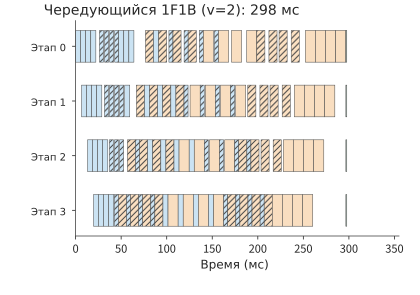
Рис. 10-21. Временная шкала этапов чередующегося 1F1B (\(v=2\)), время завершения — 298 ms. Синим обозначен прямой проход, оранжевым — обратный, зелёным — обновление параметров, а заштрихованные блоки соответствуют второму блоку слоёв на каждой карте. Каждый блок примерно вдвое короче блока на рис. 10-18; промежутки во время прогрева и опустошения заполняются вычислениями другого блока слоёв, поэтому первый прямой проход этапа 3 начинается примерно в 20 ms вместо 33 ms. Каждый micro-batch должен пересечь на четыре границы больше.
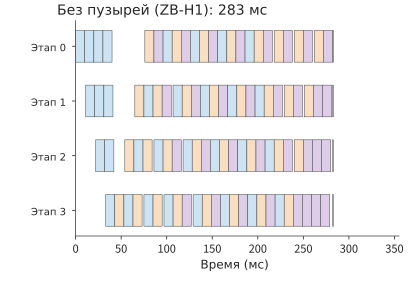
Рис. 10-22. Временная шкала этапов планирования zero-bubble (ZB-H1), время завершения — 283 ms. Синим обозначен прямой проход, оранжевым — \(dX\), фиолетовым — \(dW\), зелёным — обновление параметров. В установившемся режиме каждый этап циклически выполняет прямой проход, \(dX\) и \(dW\); промежутки между обратными проходами и при опустошении в конце, показанные на рис. 10-18, заполняются отложенными вычислениями \(dW\), поэтому четыре этапа завершаются почти одновременно. На этапе 3 вычисление \(dW\) отстаёт от \(dX\) на три micro-batch, и там активации сохраняются дольше всего.
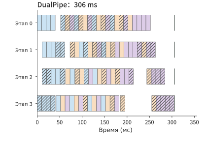
Рис. 10-23. Временная шкала этапов DualPipe, время завершения — 306 ms. Цвета соответствуют рис. 10-22, а заштрихованные блоки обозначают вычисления второй половины micro-batch, поступающей с этапа 3 в обратном направлении. Каждый этап одновременно обслуживает два направления; промежутки прогрева и опустошения одного направления заполняются блоками другого. Цена — хранение двух копий параметров на каждой карте.
Ни один вариант планирования не превосходит остальные одновременно по обеим осям. Если отдельно ранжировать пять вариантов по каждой оси, первые места займут разные варианты: минимальное время завершения обеспечивает zero-bubble, а минимальный максимальный пик отдельного этапа — 1F1B. В трёх расширенных вариантах время, полученное за счёт сжатия пузырей, оплачивается увеличением другого ресурса. Поэтому перед выбором планирования нужно определить, с какой стороны находится ограничение: по времени или по ёмкости. На рис. 10-24 обе оси показаны рядом без fill–drain; значения можно сопоставить с приведённой выше таблицей.
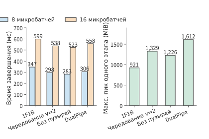
Рис. 10-24. Время завершения четырёх вариантов конвейерного планирования для восьми и шестнадцати micro-batch, а также максимальный для отдельного этапа пиковый объём активаций и буферов приёма и передачи при восьми micro-batch. Во всех четырёх вариантах используются одинаковые условия: прямой проход 10 ms, обратный проход 20 ms, передача через границу 1 ms и обновление параметров 1 ms.
Если удвоить число micro-batch до 16, время завершения 1F1B, чередующегося варианта, zero-bubble и DualPipe составит соответственно 599, 538, 523 и 558 ms; порядок не изменится. Целесообразность сжатия пузырей зависит от соотношения сэкономленного времени пузырей и новых издержек. С увеличением \(m\) доля пузырей \((p-1)/m\) сама по себе уменьшается: при 16 micro-batch доля пузырей 1F1B снижается с 37.5% до 18.8%, поэтому относительная выгода от более мелкого разбиения сокращается. При этом дополнительное число коммуникаций в чередующемся варианте, дополнительная резидентность активаций в zero-bubble и дополнительный объём параметров в DualPipe не уменьшаются с ростом \(m\). Конкуренция за канал из раздела 10.3.3 задаёт ещё одну границу: четыре дополнительные межэтапные передачи каждого micro-batch в чередующемся варианте непосредственно удлиняют критический путь, если канал уже полностью занят редукцией градиентов. При дефиците памяти порядок выбора меняется: сначала согласно разделу 10.2.4 исключаются варианты с невыполнимым пиковым потреблением, после чего сравнивается время завершения.
10.3.3 Зависимости обратного прохода, группировка градиентов в буферы и перекрытие коммуникаций¶
Промежуток в 2 ms из предыдущего раздела возникает из-за того, что входные данные ещё не поступили. Коммуникации градиентов подчиняются тому же правилу: перед отправкой необходимо дождаться появления данных, а при отправке — освобождения канала. Обратное распространение послойно создаёт градиенты; в реализациях несколько тензоров градиентов обычно объединяются в один коммуникационный буфер, который отправляется после вычисления всех входящих в него градиентов. Чем больше буфер, тем вероятнее ожидание градиента, создаваемого последним; чем меньше буфер, тем больше раз приходится запускать коммуникацию. Планирование должно найти баланс между стоимостью запуска и ранней отправкой.
Пусть редукция занимает 3 ms, а после готовности градиента остаётся ещё 5 ms независимых от неё вычислений, с которыми редукция может выполняться одновременно. Если до этого общий канал уже на 4 ms занят обменом между экспертами, для перекрытия редукции остаётся только 1 ms, а ещё 2 ms продолжаются после завершения вычислений. Эта часть не может быть перекрыта вычислениями и удлиняет шаг обучения; она называется временем ожидания коммуникации. Зависимости данных задают самое раннее время начала, конкуренция за ресурсы отодвигает его, а зависимости последующих операторов определяют, удлинит ли это ожидание весь шаг обучения.
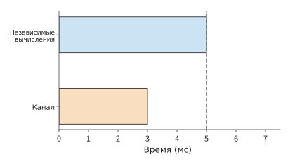
Рис. 10-25. При свободном канале редукция длительностью 3 ms (оранжевого цвета) успевает завершиться до окончания независимых вычислений длительностью 5 ms (синего цвета). Пунктирная линия обозначает завершение вычислений.
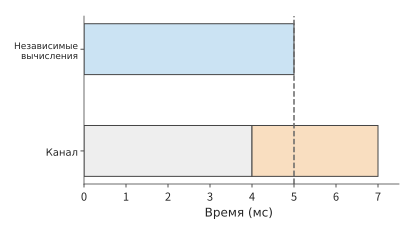
Рис. 10-26. Канал сначала на 4 ms занят другой коммуникацией (серого цвета), поэтому редукция откладывается до интервала 4–7 ms. Дополнительные 2 ms после пунктирной линии удлиняют шаг обучения.
На рис. 10-25 момент появления градиента временно считается фиксированным. В реальном обучении порядок вычислений можно изменить, чтобы некоторые градиенты появлялись раньше и редукция начиналась раньше на временной шкале. При обратном проходе матрицы градиент входа \(dX\) передаётся предыдущему слою для продолжения обратного распространения, а градиент параметров \(dW\) — в редукцию текущего слоя. Если сначала вычислить \(dX\), предыдущий слой сможет раньше начать обратное распространение; если сначала вычислить \(dW\), раньше начнётся коммуникация градиента текущего слоя. Когда оба вычисления конкурируют за один ресурс, изменение порядка перераспределяет окно коммуникации. Поэтому при планировании обучения необходимо одновременно учитывать зависимости прямого и обратного проходов.
Теперь применим это правило для вычисления времени ожидания коммуникаций в проектном примере. В обоих вариантах используется ZeRO-3 для всей группы, а каждый micro-batch выполняет три коллективные коммуникации: перед прямым проходом с помощью AllGather один раз собираются веса BF16, перед обратным проходом они собираются ещё раз, а после обратного прохода над градиентами BF16 один раз выполняется ReduceScatter. В каждой коллективной коммуникации объём отправляемых и принимаемых каждой картой данных равен \((d-1)/d\times2N\) байт, что для 48 карт составляет около 16.0 GB. На каждой карте накапливается \(m\) micro-batch, поэтому объём коммуникаций за шаг равен
При 48 картах \(m=8\), а \(V\approx385\) GB; при 32 картах \(m=12\), а \(V\approx571\) GB. Маршрут передачи этих байтов определяется оборудованием. RTX 4090 не поддерживает NVLink и межкарточный P2P, то есть прямое чтение и запись видеопамяти одной карты другой картой через PCIe; поэтому даже обмен между двумя картами на одном хосте проходит через память хоста, а весь объём отправки и приёма каждой карты проходит через её PCIe 4.0 x16 с пропускной способностью 32 GB/s в каждом направлении. Согласно опубликованной конфигурации кластера 4090, каждый хост с восемью картами оснащён восемью сетевыми картами на 200 Gbit/s, по 25 GB/s каждая; кольцевые коллективные коммуникации распределяют межхостовый трафик между восемью сетевыми картами, поэтому они не становятся узким местом. В результате время использования канала за шаг составляет примерно \(385/32\approx12.0\) s для 48 карт и около 17.9 s для 32 карт.
Время использования канала не равно времени ожидания коммуникации. ZeRO-3 предварительно загружает параметры слоя перед его выполнением и немедленно редуцирует градиенты после завершения обратного прохода этого слоя. При 48 картах время использования канала одним micro-batch составляет примерно 1.50 s, тогда как вычисления этого micro-batch занимают около 6.53 s; на уровне отдельных слоёв сбор примерно 0.39 GB параметров одного слоя занимает лишь около 12 ms, что также значительно меньше времени вычисления слоя. Поэтому большая часть коммуникаций перекрывается вычислениями. MegaScale использует при параллелизме по данным тот же подход и отмечает, что скрыть не удаётся только первый AllGather и последний ReduceScatter шага. Для Qwen3-8B обе коммуникации относятся к эмбеддингам слов объёмом около 1.24 GB: эмбеддинги слов являются первым слоем прямого прохода и последним слоем, для которого вычисляется градиент при обратном проходе. Вместе эти две коммуникации занимают около 0.08 s — это и есть время ожидания коммуникаций за шаг. Обновление параметров и внутрикартовые нематричные операции уже учтены в эффективности вычислений одной карты; при готовых входных данных длительность шага для двух вариантов составляет соответственно около 78.4 s и 52.3 s.28
То, что большая часть коммуникаций перекрывается вычислениями, также задаёт верхнюю границу выгоды от оптимизации. Если из редукции длительностью 1.3 s лишь 0.2 s продолжаются после завершения обратного прохода, то при неизменной остальной временной шкале даже полное устранение этого ожидания сократит весь шаг не более чем на 0.2 s. Если для достижения цели не хватает ещё 0.5 s, необходимо одновременно сокращать другую работу на критическом пути.
Пример: какое ускорение даст четырёхкратное увеличение числа карт при неизменном глобальном batch? Система крупномасштабного распределённого обучения MegaScale сохраняла global batch size 6144 для модели 175B и увеличила число карт с 3072 до 12288. Изначально один шаг занимал около 23.7 s. Если бы четырёхкратное увеличение числа карт обеспечивало четырёхкратное ускорение, время шага сократилось бы примерно до 5.9 s, однако фактически оно составило около 6.3 s. Общее ускорение — примерно 3.7 раза, что соответствует эффективности масштабирования около 93%. После увеличения числа карт объём работы на каждой карте уменьшается, а доля ожидания из-за межгрупповой синхронизации и несбалансированной нагрузки в общем времени шага возрастает; фактический шаг примерно на 0.4 s дольше идеального — это дополнительное время, требующее анализа после масштабирования. Согласно порядку из раздела 1.3.4, сначала в модель добавляются межгрупповая синхронизация и дисбаланс нагрузки: чем больше карт, тем большую долю шага занимает ожидание самой медленной группы, и это работа, возникающая непосредственно из-за масштабирования. Только оставшуюся после этого необъяснённую разницу следует относить к накладным расходам реализации.13
10.3.4 Изменения планирования для MoE и длинного контекста¶
В плотной модели каждый прямой проход использует все веса feed-forward-блока каждого слоя, поэтому при параллелизме по данным работа распределяется сравнительно равномерно. Маршрутизация MoE приводит к тому, что разные карты получают разное число токенов, а различия в длине последовательностей означают, что одинаковое число токенов может соответствовать разному объёму вычислений. Поэтому при анализе времени шага необходимо учитывать, как работа распределяется между картами и какая карта завершается последней.
Как неравномерный dispatch экспертов увеличивает время вычисления самой загруженной карты. Пусть эксперты на двух картах получают соответственно 96 и 32 операции token dispatch. Каждая операция dispatch отправляет вектор признаков одного токена одному эксперту и занимает одну строку во входной матрице этого эксперта. Предположим, что время вычисления каждой операции dispatch приблизительно одинаково. Всего выполняется 128 операций dispatch, соответствующих 128 действительным строкам; в среднем на каждую карту приходится 64 строки, но время завершения определяется стороной с 96 строками. Если изменить распределение на 64 и 64 строки, время вычисления экспертов сократится с времени обработки 96 строк до времени обработки 64 строк, то есть на треть.
Механизм балансировки маршрутизации при обучении определяет, как образцы выбирают экспертов; копии экспертов и их топологическое отображение определяют, где именно выполняется этот выбор.
Приведённая выше корректировка предполагает, что токены можно свободно перемещать между экспертами. В действительности dispatch определяется оценками маршрутизатора, а механизм балансировки может влиять только на распределение dispatch; при выполнении также требуется явное правило обработки дисбаланса. Это правило задаёт коэффициент ёмкости (capacity factor) \(c\): входная матрица каждого эксперта может содержать не более
строк, то есть в \(c\) раз больше среднего числа dispatch, где \(k\) — число экспертов, выбираемых для каждого токена, а \(E\) — число экспертов. Операции dispatch сверх ёмкости отбрасываются: слой не обрабатывает эти токены, и их представления передаются непосредственно следующему слою через остаточное соединение; незанятые слоты ёмкости заполняются нулями, но эти строки всё равно требуют вычислений и коммуникаций.5
Подставим значения из предыдущего примера: 128 операций dispatch, \(E=2\), \(k=1\), в среднем по 64 строки на эксперта. При \(c\), равном 1.0, 1.25, 1.5 и 2.0, ёмкость каждого эксперта составляет соответственно 64, 80, 96 и 128 строк. Эксперт, получивший 96 операций dispatch, отбрасывает соответственно 32, 16, 0 и 0 токенов, а суммарное число строк с нулевым заполнением у двух экспертов составляет 32, 48, 64 и 128. При \(c=1.0\) общий объём выполнения в точности равен 128 действительным операциям dispatch, однако четверть из них отбрасывается; начиная с \(c=1.5\) отбрасывания больше нет, но треть выполняемых строк заполнена нулями.
Теперь рассмотрим масштаб маршрутизации реальной модели. Qwen3-235B-A22B содержит \(E=128\) экспертов, а каждый токен выбирает \(k=8\) экспертов; для 8,192 токенов выполняется в общей сложности 65,536 операций dispatch, в среднем по 512 строк на эксперта. Предположим, что половина экспертов получает в 1.5 раза больше среднего числа операций dispatch; это соответствует тому же дисбалансу 3:1, что и соотношение 96/32 в предыдущем примере: каждый горячий эксперт получает 768 строк, а каждый холодный — 256. При \(c\), равном 1.0, 1.25, 1.5 и 2.0, ёмкость каждого эксперта составляет соответственно 512, 640, 768 и 1,024 строки. Горячие эксперты отбрасывают соответственно 256, 128, 0 и 0 операций dispatch каждый, что в сумме составляет 25%, 12.5%, 0 и 0 от общего числа dispatch; строки с нулевым заполнением составляют 25%, 30%, 33% и 50% от всего объёма выполнения.
| Коэффициент ёмкости \(c\) | Ёмкость одного эксперта / строк | Доля отброшенных dispatch | Доля строк с нулевым заполнением в объёме выполнения |
|---|---|---|---|
| 1.0 | 512 | 25% | 25% |
| 1.25 | 640 | 12.5% | 30% |
| 1.5 | 768 | 0 | 33% |
| 2.0 | 1,024 | 0 | 50% |
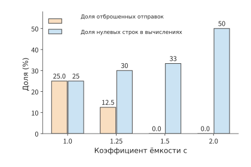
Рис. 10-27. Для формы маршрутизации Qwen3-235B-A22B (\(E=128\), \(k=8\), 8,192 токена, половина экспертов получает в 1.5 раза больше среднего) с ростом коэффициента ёмкости доля отброшенных dispatch уменьшается, а доля строк с нулевым заполнением увеличивается.
Условие перехода определяется распределением маршрутизации: для приведённого распределения требуется \(c=1.5\), чтобы снизить долю отбрасывания до нуля; чем равномернее маршрутизация, тем ближе необходимое значение \(c\) к 1 и тем меньше потери на нулевое заполнение. Вспомогательная функция потерь, то есть дополнительный член балансировки нагрузки в цели обучения, непосредственно штрафует неравномерность dispatch; схема DeepSeek-V3 без вспомогательной функции потерь динамически корректирует смещения маршрутизации в соответствии с нагрузкой экспертов. Оба подхода делают распределение более равномерным, позволяя использовать меньший коэффициент ёмкости. Формула ёмкости экспертов из раздела 2.4 предполагает, что при маршрутизации не отбрасывается ни одной операции token dispatch (\(\sum_e t_e=mk_{\mathrm{top}}\)), то есть соответствует достаточно большому коэффициенту ёмкости и нулевой доле отбрасывания.5
После балансировки объёма вычислений экспертов передача данных всё ещё может заставлять карты ждать. Обмен токенами при прямом проходе MoE, передача градиентов входа при обратном проходе и редукция градиентов параметров конкурируют за один канал, поэтому здесь также нужен анализ временной шкалы коммуникаций из предыдущего раздела. Возьмём градиент эксперта FP32 объёмом 72 MiB, над которым четыре участника параллелизма по данным, содержащие этого эксперта, выполняют кольцевой AllReduce. Каждая карта отправляет \(2\times3/4\times72=108\) MiB. Каждая карта оснащена сетевой картой на 200 Gbit/s с пропускной способностью 25 GB/s в каждом направлении, а запуск каждого коллективного вызова занимает около 0.02 ms. Обработка всего буфера занимает около 4.55 ms, поэтому он не помещается в свободный промежуток длительностью 2 ms. Если разделить градиент на три подбуфера по 24 MiB, каждый из них отправит 36 MiB примерно за 1.53 ms и сможет завершиться в одном из трёх таких свободных промежутков; однако общее время обработки коммуникаций возрастёт примерно до 4.59 ms. Несмотря на два дополнительных запуска коммуникации, каждый малый буфер успевает передаться до завершения вычислений, поэтому ожидание после вычислений сокращается. При переходе на сетевую карту 400 Gbit/s обработка всего буфера занимает около 2.28 ms, что всё ещё не позволяет поместить её в промежуток 2 ms, поэтому разбиение на буферы по-прежнему необходимо.14
Нагрузка эксперта зависит от того, сколько операций token dispatch получили эксперты на каждой карте. Для длинного контекста возникает дополнительное различие: даже при одинаковом общем числе токенов количество вычисляемых пар внимания может различаться.
Как неравномерная длина последовательностей увеличивает объём вычислений внимания при одинаковом числе токенов. Для причинной последовательности длины \(s\) первый токен просматривает один токен, второй — два и так далее, что в сумме даёт \(s(s+1)/2\) действительных пар внимания. Две последовательности длиной 4096 и 4096 содержат в общей сложности около 16.8 миллиона пар; если изменить длины на 7168 и 1024, общее число токенов останется равным 8192, но число пар возрастёт примерно до 26.2 миллиона, то есть приблизительно на 56%. Число пар внимания растёт приблизительно квадратично с длиной последовательности, поэтому более длинная последовательность увеличивает общий объём вычислений.15
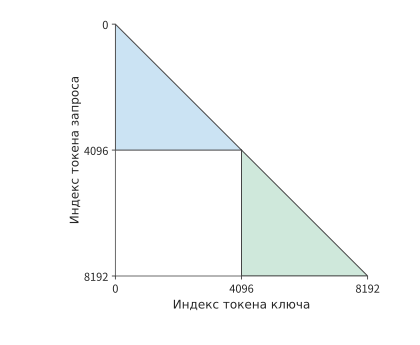
Рис. 10-28. Пары причинного внимания для двух последовательностей по 4096 токенов. Каждый токен запроса считывает позиции своей последовательности, не следующие за ним, образуя два треугольника; вычисления внимания двух последовательностей независимы, а общее число пар равно 16781312.
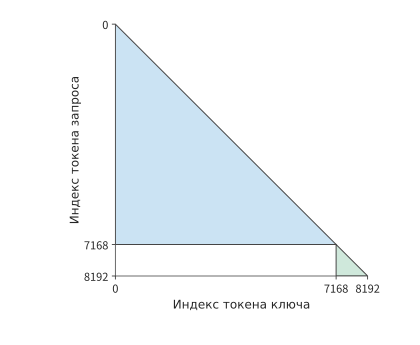
Рис. 10-29. Если те же 8192 токена разделить на последовательности длиной 7168 и 1024, общее число причинных пар возрастёт до 26218496. Увеличение площади треугольника более длинной последовательности превышает уменьшение площади треугольника более короткой.
На рис. 10-29 дополнительная площадь большого треугольника возникает из реальных связей внимания, поэтому её нельзя устранить удалением токенов заполнения. Упаковка, то есть объединение нескольких коротких последовательностей в одну последовательность целевой длины, уменьшает число токенов заполнения; группировка по длине делает площади треугольников, обрабатываемых разными картами, более близкими; параллелизм по контексту дополнительно распределяет вычисления длинной последовательности между несколькими картами и получает хранящиеся на других картах данные посредством обмена K и V. Эти три метода изменяют соответственно бесполезную работу, распределение работы и путь поступления данных. При сравнении вариантов с одинаковым общим числом токенов необходимо сохранять неизменными распределение длин, маску видимости (mask, определяющую, какие токены контекста может считывать каждая позиция токена) и веса функции потерь, чтобы отделить выгоду планирования от изменения задачи.
10.4 Ввод данных, checkpoint и восстановление после сбоев¶
Анализ времени шага в разделе 10.3 предполагает, что входные данные уже подготовлены, а обучение не прерывается из-за сбоев. При непрерывной работе чтение и предобработка данных должны успевать за вычислениями, а checkpoint должен сохранять состояние обучения, пригодное для восстановления. В этом разделе оба фактора включаются в расчёт времени завершения из начала главы: ввод определяет, смогут ли ускорители работать непрерывно, а восстановление — какую долю уже выполненной работы придётся повторить.
10.4.1 Чтение, упаковка и предварительная загрузка данных¶
Исходные данные считываются, декодируются или токенизируются, фильтруются, а затем объединяются в обучающие последовательности целевой длины, помещаются в буфер памяти хоста и наконец передаются на GPU. Для буфера хоста обычно используется закреплённая память, чтобы во время асинхронной передачи данные оставались в физической памяти. Устойчивая скорость обработки на каждом этапе определяет скорость ввода, а очереди сглаживают кратковременные колебания скорости.
Малый объём данных, в конечном счёте поступающих на GPU, не означает, что предшествующая подготовка будет столь же быстрой. Бюджет в 25 дней требует около 46 300 токенов/с, то есть примерно 5,7 последовательности по 8 192 токена в секунду. Если передавать token ID в формате int64 по 8 байт на каждый идентификатор, скорость потока данных составит всего около 0,37 MB/s. Допустим, каждый CPU-процесс подготовки данных формирует две последовательности в секунду. Тогда два процесса подготовят лишь четыре последовательности/с, что ниже необходимого уровня, а три процесса достигнут шести последовательностей/с. Хотя объём передаваемых данных мал, их подготовка на CPU всё равно может замедлить весь кластер.
В проектном примере этой главы для ввода выделены четыре таких процесса подготовки данных с общей производительностью восемь последовательностей/с. При готовом вводе шаг на 48 ускорителях занимает около 52,3 s и обрабатывает 384 последовательности, поэтому требуется около 7,3 последовательности/с, что ниже восьми последовательностей/с. Данные подготавливаются быстрее, чем потребляются обучением, поэтому после кратковременного замедления очередь предварительной загрузки можно снова заполнить. Кроме того, в проектном примере на каждый шаг закладывается в среднем 0,5 s ожидания ввода, которое не удалось устранить предварительной загрузкой. В результате время шага для 32 и 48 ускорителей становится равным примерно 78,9 s и 52,8 s соответственно.28
Очередь предварительной загрузки позволяет подготовке данных и вычислениям на GPU выполняться с разной скоростью. Во время штатного обучения заранее подготовленные данные уменьшают задержки из-за колебаний скорости ввода; однако при сохранении checkpoint необходимо точно различать, какие данные уже использованы для обучения. Предположим, загрузчик данных уже назначил задачи подготовки для первых 108 батчей, но обучение завершило только батч 100, а батчи 101—108 всё ещё обрабатываются или стоят в очереди. Если после восстановления сразу начать с батча 109, восемь батчей будут пропущены. Позиция батча, уже назначенного процессам подготовки данных, отражает прогресс предварительной загрузки, а позиция батча, уже использованного для обучения, — прогресс обучения; буфер между ними содержит данные, на которых обучение ещё не выполнялось.
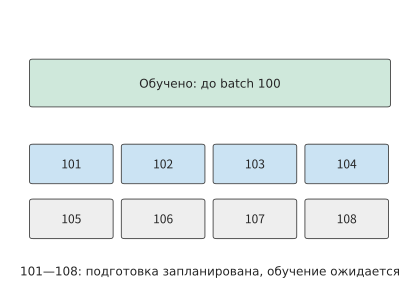
Рисунок 10-30. Обучение завершило батч 100, а задачи предварительной загрузки назначены вплоть до батча 108. Восемь промежуточных батчей всё ещё необходимо использовать для обучения: часть из них уже подготовлена, остальные ещё обрабатываются. Пунктирные рамки обозначают батчи, обработка которых ещё продолжается. При восстановлении эти данные следует сохранить либо подготовить заново, продолжив с батча 101.
Очередь на рисунке 10-30 способна лишь временно компенсировать снижение скорости подготовки. Если данные продолжительное время подготавливаются медленнее, очередь в конце концов опустеет. Запись checkpoint подчиняется тому же ограничению: если средняя скорость создания сохраняемых данных превысит скорость, с которой хранилище способно устойчиво их принимать, ожидающие записи снимки состояния будут накапливаться, пока ограниченный промежуточный буфер не заполнится. В разделе 10.4.3 это накопление рассчитывается для конкретных скоростей записи. В текстовой задаче этой главы объём данных на стороне ввода мал, а узкое место находится в подготовке данных на CPU. Средний поток записи checkpoint также невелик: при интервале сохранения 1800 s и размере checkpoint около 115 GB в проектном примере он составляет лишь около 64 MB/s. Пауза во время сохранения отдельно учитывается в разделе 10.4.4.16
10.4.2 Восстанавливаемое состояние и преобразование раскладки¶
Предположим, обучение только что завершило обновление параметров, после чего работа остановилась. Чтобы продолжить обучение после восстановления, необходимо знать текущие веса, данные следующего батча и накопленную оптимизатором историю. Одних весов достаточно для прямого инференса, но недостаточно для определения следующего обновления при обучении. Поэтому обучающий checkpoint должен сохранять всё необходимое состояние, соответствующее одному и тому же прогрессу обучения, чтобы после восстановления обучение можно было продолжить.
Для обучения с Adam в этой главе необходимо сохранять веса, моменты первого и второго порядка, номер шага, состояние learning rate, случайное состояние и состав следующего батча данных. Learning rate управляет величиной шага обновления, а случайное состояние определяет последовательность последующей случайной выборки. При одинаковых весах, но разных состояниях моментов оптимизатора следующее обновление параметров может различаться; при одинаковой позиции чтения данных, но разных оставшихся после упаковки токенах изменится и следующая обучающая последовательность. Пересчёт активаций из раздела 10.2.2 определяет, какие промежуточные значения можно воссоздать в пределах одного прямого и обратного прохода; checkpoint определяет, как продолжить весь процесс обучения после прерывания.
После завершения итерации обучения градиенты для следующего батча заново вычисляются обратным проходом. В этот момент сохраняются веса размером 2 bytes, основные веса размером 4 bytes и два состояния Adam общим размером 8 bytes — всего 14 bytes на параметр. Эта часть checkpoint для Qwen3-8B занимает около 115 GB. Если в конце итерации обучения одновременно сохранить состояние модели и позицию в обработанных данных, после восстановления можно однозначно определить, какие параметры использовать и с какого батча продолжить обучение.
При восстановлении может также потребоваться изменить схему параллелизма, повторно разделив одно и то же состояние на шарды. Пример: как переразделить checkpoint с четырёхстороннего тензорного параллелизма на восьмисторонний? Веса проекции гейтинга имеют форму \([12288,4096]\) и занимают 96 MiB в BF16. При разделении выходного измерения на четыре части каждый шард содержит 3072 строки и занимает 24 MiB; после разделения на восемь частей каждый шард содержит 1536 строк и занимает 12 MiB. Целевой ускоритель с рангом \(r\) считывает старый шард \(\lfloor r/2\rfloor\): чётный ранг берёт первую половину, нечётный — вторую. Глобальные координаты строк связывают старую раскладку с новой.
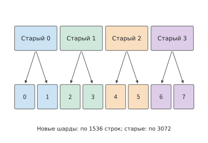
Рисунок 10-31. Положение по горизонтали соответствует номеру строки исходной матрицы, а цвет обозначает старый шард. После разделения каждого старого шарда на первую и вторую половины они помещаются в два новых шарда. Содержимое и порядок весов модели остаются прежними; изменяется только диапазон строк, за который отвечает каждый ускоритель. Общий объём весов BF16 всегда равен 96 MiB. Верхние номера с пометкой «старые» обозначают исходные шарды, нижние — шарды после перераспределения.
Следуя стрелкам на рисунке 10-31, программа восстановления может найти исходный диапазон строк, соответствующий каждому новому шарду. Основные веса FP32 и два состояния Adam разделяются по тем же диапазонам строк, причём каждый из этих компонентов вдвое больше весов BF16. Поэтому полное состояние этой матрицы в checkpoint занимает \(96\times(1+2+2+2)=672\) MiB. Системы класса ByteCheckpoint описывают такие тензоры с помощью глобальной формы, смещения и длины фрагмента, позволяя программе восстановления считывать диапазоны, необходимые для целевой раскладки. Файловые шарды определяют размещение в хранилище, а глобальные координаты указывают, к какому тензору относится каждый шард и в каких строках и столбцах он расположен.17
Веса можно заново собрать по номерам строк исходной матрицы, а для обучающих последовательностей также необходимо сохранить достаточно информации, чтобы воспроизвести тот же ввод. Данные с рисунка 10-30, которые уже подготовлены, но ещё не использованы для обучения, также необходимо заново локализовать при восстановлении. Помимо позиции батча, следует сохранить промежуточные результаты предобработки данных.
Если в упаковщике осталось 2 000 токенов, а следующая порция данных содержит 6 192 токена, вместе они образуют следующую последовательность из 8 192 токенов. Если эти 2 000 токенов потеряны, недостающие токены придётся взять из последующих данных, что изменит префикс следующей последовательности, связи внимания и метки. Чтобы после восстановления продолжить формирование того же батча данных, вместе с результатом обновления параметров необходимо сохранить позицию уже использованных для обучения данных и токены, ещё не объединённые в полную последовательность.18
10.4.3 Синхронное и асинхронное сохранение, конкуренция за пропускную способность¶
В этом разделе рассматривается, как процесс сохранения может выполняться одновременно с обучением и в какой момент снимок состояния действительно становится доступным.
При синхронном сохранении сначала создаётся снимок с зафиксированным содержимым, и обучение продолжается только после завершения записи. При асинхронном сохранении снимок копируется в отдельный буфер памяти, а затем записывается в фоне, что позволяет раньше возобновить обучение. В момент возобновления обучения запись снимка может быть ещё не завершена; использовать его для восстановления после сбоя можно только после окончания записи и фиксации.
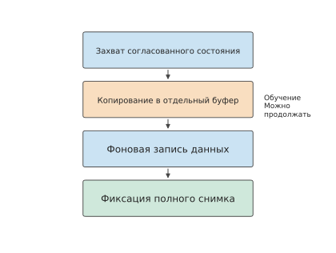
Рисунок 10-32. После захвата согласованного состояния обучения и его копирования в отдельный буфер обучение может продолжиться; программа восстановления использует checkpoint только после завершения фоновой записи данных и фиксации полного снимка. Стрелки обозначают зависимости по порядку выполнения.
Пример: как скорость загрузки checkpoint определяет объём повторной работы после сбоя? Возьмём снимок размером 112 GB. В эталонной архитектуре DGX SuperPOD уровни производительности хранилища определяются типом нагрузки. Обучению NLP соответствует уровень Good, обеспечивающий для одного SU — масштабируемого блока из 32 систем DGX — суммарную скорость записи в хранилище 7 GB/s. При такой скорости запись одного снимка занимает 16 s. Если создавать снимок каждые 10 s, ожидающие записи данные будут поступать со скоростью 11,2 GB/s, и очередь станет непрерывно расти. Если создавать снимок каждые 20 s, средняя требуемая скорость снизится до 5,6 GB/s, и хранилище успеет записать предыдущий снимок до поступления следующего.
Два снимка захватываются на 20-й и 40-й секундах, каждый копируется в буфер за 0,5 s, после чего загружается; запись завершается на отметках 36,5 и 56,5 s. Если сбой произойдёт на 50-й секунде, второй снимок всё ещё будет загружаться, поэтому восстановиться можно лишь до состояния на 20-й секунде, повторив 30 s работы. При использовании уровня Better с суммарной скоростью записи 20 GB/s каждый снимок записывается всего за 5,6 s, а их фиксация завершается на отметках 26,1 и 46,1 s. При том же сбое можно восстановиться до состояния на 40-й секунде и повторить лишь 10 s работы.
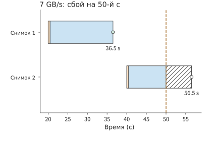
Рисунок 10-33. Два снимка по 112 GB записываются со скоростью 7 GB/s: каждый сначала копируется в буфер за 0,5 s (оранжевый), а затем загружается (синий). При сбое на 50-й секунде первый снимок уже зафиксирован, а второй — ещё нет; штриховкой обозначена оставшаяся загрузка при отсутствии сбоя, пустой кружок показывает запланированный момент фиксации.
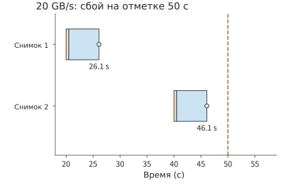
Рисунок 10-34. Те же снимки записываются со скоростью 20 GB/s и фиксируются на отметках 26,1 и 46,1 s. При сбое на 50-й секунде можно восстановить состояние обучения на 40-й секунде и повторить лишь 10 s работы.
В обоих вариантах обучение дважды приостанавливается на 0,5 s, то есть суммарно на 1 s. Более быстрая запись позволяет после сбоя восстановиться до более позднего состояния обучения и сократить повторную работу на 20 s. Таким образом, момент завершения асинхронного сохранения непосредственно влияет на долгосрочный прогресс: скорость фоновой записи определяет объём повторной работы после сбоя, а длительность приостановки обучения во время сохранения увеличивает время штатного выполнения.
Помимо записи файлов данных, реальная система должна зафиксировать метаданные, описывающие полный снимок. В серии экспериментов на CPU вызов интерфейса сохранения (API) возвращал управление примерно через 7 ms, а метаданные восстановления фиксировались лишь примерно через 48 ms. Если завершить процесс до фиксации, программа восстановления выберет предыдущий полный checkpoint. Файлы данных и запись о фиксации вместе образуют пригодный снимок, по которому программа восстановления определяет, какой checkpoint сохранён полностью.19
10.4.4 Масштаб сбоев, период сохранения и эффективный прогресс обучения¶
На рисунке 10-33 заданы моменты двух сохранений и сравнивается влияние скорости записи. Можно также изменять интервал сохранения: при коротком интервале состояние в момент сбоя ближе к последнему снимку, а при длинном — во время штатного обучения требуется меньше пауз для сохранения. Эти две составляющие затрат изменяются в противоположных направлениях, поэтому между ними существует компромиссная точка.
Пусть каждое синхронное сохранение занимает \(c\), между сохранениями выполняется \(\tau\) секунд полезного обучения, частота сбоев задания равна \(\lambda\), а восстановление занимает \(r\). Предположим, что сбои происходят сравнительно редко и независимо друг от друга. Тогда в модели первого порядка дополнительные затраты на единицу полезного времени обучения равны
Первый член обусловлен сохранением через каждые \(\tau\) секунд. Сбой может произойти в любой момент между двумя сохранениями, поэтому в среднем теряется половина интервала, что даёт второй член. Третий член — ожидаемое число восстановлений на единицу полезного времени обучения, умноженное на длительность каждого восстановления. Первый из двух начальных членов уменьшается, а второй растёт, поэтому оптимальная точка удовлетворяет условию
Пример: как число ускорителей и частота сбоев определяют интервал сохранения checkpoint? Meta собрала статистику обучающих заданий в исследовательском кластере: задание на 1024 ускорителях прерывалось в среднем раз в 7,9 часа, причём частота прерываний была пропорциональна числу ускорителей. Это соответствует одному сбою на ускоритель примерно раз в 337 дней. Сбой любого ускорителя прерывает всё задание. Сохранение checkpoint размером около 115 GB со скоростью 7 GB/s занимает \(c\approx16.4\) s. Если восстановление занимает 120 s, оптимальный интервал составляет около 965 s, то есть примерно 16 минут.20
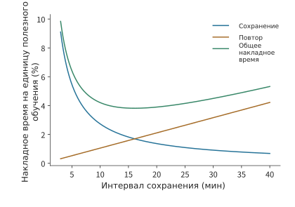
Рисунок 10-35. Синяя линия показывает долю времени сохранения, оранжевая — долю времени повторной работы после сбоев, зелёная — их сумму с учётом времени восстановления. Используется модель первого порядка, в которой задание на 1024 ускорителях прерывается в среднем раз в 7,9 часа, сохранение занимает около 16,4 s, а восстановление — 120 s. Минимум находится в точке, где уравновешиваются две зависящие от интервала составляющие затрат.
Минимум на рисунке 10-35 достаточно пологий, поэтому при настройке можно выбрать близкий удобный интервал. В следующей таблице сравниваются интервалы в пять, пятнадцать и тридцать минут, чтобы показать, какая составляющая затрат растёт при отклонении от минимума.
| Интервал полезного обучения | Затраты на сохранение | Затраты на повторную работу | Затраты на восстановление | Итого |
|---|---|---|---|---|
| 300 s | 5,5% | 0,5% | 0,4% | 6,4% |
| 900 s | 1,8% | 1,6% | 0,4% | 3,8% |
| 1800 s | 0,9% | 3,2% | 0,4% | 4,5% |
При увеличении интервала сохранения с пяти до пятнадцати минут экономия времени на сохранении превышает дополнительное время повторной работы. При дальнейшем увеличении до тридцати минут дополнительное время повторной работы уже превышает экономию времени на сохранении. Итоговые значения в таблице рассчитаны по неокруглённым числам. Удвоение числа ускорителей удваивает частоту сбоев, поэтому оптимальный интервал уменьшается в \(1/\sqrt2\) раза. Удвоение скорости сохранения сокращает оптимальный интервал в той же пропорции, поскольку каждое сохранение занимает меньше времени.
В проектном примере этой главы используется меньше ускорителей. При среднем времени между сбоями одного ускорителя (MTBF) около 337 дней, длительности восстановления 120 s и длительности сохранения около 16,4 s выбран интервал полезного обучения 1800 s. Для 32 ускорителей сохранения, повторная работа и восстановление суммарно увеличивают время примерно на 1,02%, для 48 ускорителей — примерно на 1,08%. Вероятность прерывания из-за сбоя ускорителя в варианте с 48 ускорителями выше, однако дополнительные затраты больше лишь примерно на 0,06 процентного пункта, что значительно меньше выигрыша от сокращения времени вычисления на одном ускорителе. Теперь известны требования к ёмкости, время шага обучения и долгосрочные дополнительные затраты; в разделе 10.6 они будут объединены в расчёте времени завершения.
При крупномасштабном обучении даже прерывание на два-три часа может стоить десятки тысяч долларов из-за затрат на всю группу ресурсов. Период сохранения определяет, какой объём работы придётся повторить после одного сбоя, а надёжность системы — сколько раз возникнут подобные потери.
Пример: сколько денег теряется из-за одного прерывания обучения? Для MiMo-V2.6 компания Xiaomi первой среди передовых лабораторий провела прямую трансляцию процесса RL. Публичная панель выполнения показывает, что RL-постобучение моделей размеров Pro и Flash обошлось примерно в 2,6 млн и 0,9 млн долларов соответственно, то есть приблизительно в 20,6 тыс. и 10,3 тыс. долларов в час.
На рисунке 10-36 по журналам построены графики двух запусков. Pro перезапускался в общей сложности 14 раз, а суммарная длительность прерываний составила около 30,1 h, или 23,6% общего времени выполнения, что эквивалентно примерно 619 тыс. долларов. Перед пятым перезапуском Pro с момента завершения предыдущего шага прошло 2,76 h, что соответствует примерно 56,7 тыс. долларов; перед шестым и восьмым перезапусками прошло соответственно 2,63 h и 2,95 h, что соответствует примерно 54,1 тыс. и 60,7 тыс. долларов. Причины перезапусков в этих запусках относились преимущественно к трём категориям: аппаратные сбои, включая двухбитовые ошибки видеопамяти; сбои сервисов, включая аварийное завершение контейнеров и недоступность сети сервиса оценки; а также нехватка памяти — например, исчерпание KV-кэша во время инференса, переполнение видеопамяти из-за неравномерной нагрузки на экспертов во время обучения или нехватка памяти хоста при упаковке последовательностей. Кроме того, одна ошибка инфраструктуры не была обнаружена своевременно: после завершения шага 17 обучение пришлось повторить с шага 15. В результате около 4 h, потраченных до этого на шаги 16 и 17, были утрачены.6
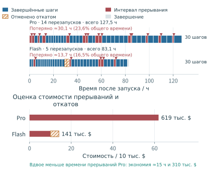
Рисунок 10-36. Время каждого запуска отсчитывается с момента его начала. Синим показаны интервалы завершённых шагов, красным — интервалы от предыдущего события до перезапуска, а треугольниками отмечены перезапуски; штриховкой обозначены два шага Flash, аннулированные после отката. Потраченное впустую время оценивается как сумма красных и заштрихованных интервалов, а в скобках указана его доля в общем времени выполнения; ниже приведены затраты, рассчитанные по публичным тарифам. Расчёт экономии предполагает неизменный объём обучающей работы и сокращение времени выполнения на величину устранённых прерываний.
Если вдвое сократить суммарное время прерываний Pro, тот же объём обучающей работы потребует примерно на 15 h меньше, что при указанных тарифах сэкономит около 310 тыс. долларов. Этого можно добиться двумя способами. Во-первых, устранить повторяющиеся сбои: например, команда MiMo изменила схему параллелизма обучения и уменьшила объём памяти активаций, чтобы вместить пиковую нагрузку на экспертов. Во-вторых, раньше обнаруживать сбои, быстрее восстанавливаться и сокращать повторную работу за счёт более свежего checkpoint, уменьшая время восстановления \(r\) или потерянный интервал обучения.
10.4.5 Отстающие и медленные узлы¶
Модель из предыдущего раздела рассматривает сбой как событие, прерывающее задание. Существует и другой, более частый вид деградации, который не прерывает задание: на некотором шаге один ускоритель выполняет вычисления медленнее. Каждый шаг синхронного параллелизма по данным должен ждать завершения самого медленного ускорителя. Ускоритель, замедляющий весь шаг, называется отстающим (straggler), поэтому время шага определяется максимумом, а не средним значением по ускорителям. Пусть время вычислений на каждом ускорителе независимо и одинаково распределено со средним \(\mu\) и стандартным отклонением \(\sigma\). Тогда при \(N\) ускорителях вычислительная часть времени шага равна максимуму из \(N\) выборок. Возьмём \(\mu=52.2\) s — время вычисления на одном ускорителе в варианте с 48 ускорителями — и 0,58 s на обмен данными и ожидание ввода на каждом шаге, а для \(\sigma\) рассмотрим значения 2% от среднего (1,04 s) и 5% (2,61 s).7
Математическое ожидание максимума из \(N\) независимых нормально распределённых выборок равно \(\mu\) плюс некоторое число \(\sigma\): для \(N=8,48,1024\) это число составляет примерно 1,42, 2,23 и 3,25 соответственно. Подстановка даёт следующее ожидаемое время шага:
| Число ускорителей | \(E[\max]-\mu\) (в единицах \(\sigma\)) | Шаг при \(\sigma=2\%\), s | Шаг при \(\sigma=5\%\), s |
|---|---|---|---|
| 8 | 1,42 | 54,3 | 56,5 |
| 48 | 2,23 | 55,1 | 58,6 |
| 1024 | 3,25 | 56,2 | 61,3 |
Без колебаний каждый шаг занимает примерно \(52.2+0.58\approx52.8\) s. Чем больше ускорителей, тем выше ожидаемый максимум: при 48 ускорителях и \(\sigma=5\%\) шаг становится длиннее примерно на 5,8 s, что поглощает 40% от запаса около 14,4 s из раздела 10.6; при 1024 ускорителях прибавка составляет около 8,5 s. Медленные ускорители можно выявлять по ожиданию обмена данными: время ожидания каждого ускорителя при AllReduce градиентного бакета равно разности между моментом завершения шага и моментом завершения его собственных вычислений. Для ускорителя, время вычисления которого точно равно среднему, ожидаемая длительность такого ожидания составляет именно \(E[\max]-\mu\).7
После обнаружения медленного ускорителя возможны три реакции: ожидание, перераспределение и исключение. Ожидание: текущий шаг завершается по времени медленного ускорителя. Насколько ускоритель со временем \(\mu+3\sigma\) заставит остальные ускорители ждать дольше, зависит от того, каким был бы максимум среди остальных \(N-1\) ускорителей. При \(\sigma=2\%\) для 8 ускорителей дополнительное ожидание составляет около \(1.65\sigma\) (1,72 s), для 48 — около \(0.78\sigma\) (0,81 s), а при 1024 ускорителях максимум остальных ускорителей уже сам превышает \(\mu+3\sigma\), поэтому дополнительное ожидание равно нулю. Перераспределение: работа медленного ускорителя равномерно распределяется между оставшимися \(N-1\) ускорителями, и среднее становится равным \(\mu N/(N-1)\). Если по-прежнему взять \(\sigma=2\%\) и не учитывать стоимость переноса, шаг на 48 ускорителях займёт около 56,2 s, а на 8 ускорителях — около 61,6 s. Оба значения превышают ожидаемое время шага при ожидании с тем же \(\sigma\): 55,1 s и 54,3 s соответственно. Перераспределение добавляет каждому ускорителю \(1/(N-1)\) работы, и эта прибавка превышает ожидание, вызванное одним медленным ускорителем; чем меньше ускорителей, тем больше разница. Исключение: медленный ускоритель удаляется из задания, после чего оно перезапускается с предыдущего checkpoint. Цена равна ожидаемому объёму потерянной работы \(\tau/2\) плюс время восстановления \(r\). Здесь возьмём более короткий, чем 1800 s в проектном примере, интервал сохранения \(\tau=600\) s и \(r=120\) s. Затраты составят 420 s, то есть около восьми шагов при длительности шага 52,8 s в варианте с 48 ускорителями. Единичное колебание до \(\mu+3\sigma\) приводит к потере лишь нескольких секунд, поэтому исключение оправдано только тогда, когда ускоритель остаётся медленным на протяжении нескольких шагов. Медленные ускорители действительно встречаются в реальных кластерах: согласно MegaScale, около 0,5% машин заметно замедлялись. Статистика кластера Meta из раздела 10.4.4 также показывает зависимость между размером задания и прерываниями: среднее время безотказной работы задания на 1024 ускорителях составляет 7,9 часа, а задания на 8 ускорителях — 47,7 дня.7
Помимо аппаратных сбоев, отката к checkpoint требует ещё одно событие — всплеск функции потерь из раздела 10.1.2. Всплеск функции потерь не повреждает оборудование, но обрабатывается так же: текущие параметры отбрасываются и выполняется возврат к предыдущему снимку. Его влияние на период сохранения также совпадает с влиянием аппаратного сбоя. Если считать откат из-за всплеска функции потерь воздействием на всё задание одновременно, происходящим в среднем раз в \(1/\lambda_{\mathrm{spike}}\), модель первого порядка из предыдущего раздела принимает вид
Сохраним частоту аппаратных сбоев для 48 ускорителей — MTBF каждого ускорителя около 337 дней — и предположим, что всплеск функции потерь в среднем раз в семь дней приводит к откату. При том же \(\tau=600\) s дополнительные затраты увеличиваются с 2,80% до 2,87%, а оптимальный период сохранения сокращается примерно с 4 458 s до 3 150 s. При интервале 1800 s из проектного примера этой главы дополнительные затраты возрастают с 1,08% примерно до 1,25%, а время завершения — примерно на 0,03 дня, что не меняет выбор варианта в разделе 10.6. Условие смены режима определяется соотношением двух частот: чем чаще происходят всплески, тем короче оптимальный период; при \(\lambda_{\mathrm{spike}}\gg\lambda_{\mathrm{hw}}\) период сохранения определяется почти исключительно численной стабильностью. Если интервалы между откатами измеряются месяцами, они почти не влияют на дополнительные затраты в 1,08%.7
10.5 Обучение с подкреплением¶
В первых четырёх разделах предполагалось, что обучающие данные уже заданы. RL позволяет модели участвовать в создании следующей порции данных: модель генерирует траектории, система вычисляет вознаграждения или результаты проверки, затем траектории используются для обучения, а обновлённые веса изменяют генерацию на следующей итерации. Система превращается из обучающего конвейера, обрабатывающего фиксированные данные, в цикл обратной связи, и новые проблемы сосредоточиваются на скорости обработки отдельных этапов, перекрытии состояний при переключении и определении того, какой именно версией стратегии был создан образец. Сторона инференса, генерирующая траектории, и сторона обучения, вычисляющая функцию потерь, должны также выдавать сопоставимые вероятности для одной и той же траектории — это и есть рассматриваемая в данном разделе согласованность обучения и инференса. Она напрямую влияет на то, соответствуют ли обновления параметров предполагаемому алгоритму, а также ограничивает выигрыш от ускорения этапов и асинхронного выполнения.
10.5.1 Одна итерация генерации ответов, проверки и обновления параметров¶
Одна итерация цикла обратной связи выполняется следующим образом. Для четырёх промптов (prompt) генерируется по два ответа, что даёт восемь траекторий. Вознаграждение описывает результат этих ответов, а преимущество измеряет, насколько ответ лучше выбранного базового уровня, и используется для определения направления и величины изменения вероятности ответа. Сторона обучения формирует функцию потерь по эффективным токенам и выполняет одно обновление параметров. После передачи новых весов стороне генерации образцы следующей итерации поступают уже от обновлённой стратегии. Генерация, вычисление вознаграждений и обучение используют данные разных форматов, а идентификаторы образцов связывают их между собой.
Источник данных здесь отличается от SFT, обычно использующего фиксированный набор данных. При SFT следующий токен предсказывается на истинном префиксе заданного ответа, то есть применяется принуждение учителем; при развёртывании модель продолжает ответ на основе сгенерированного ею самой префикса. Если ранее была допущена ошибка, дальнейшая генерация может перейти в контекст, слабо представленный в обучающих данных, и ошибки будут накапливаться по мере генерации. Такой сдвиг распределения префиксов между обучением и применением — одно из ограничений SFT на фиксированных данных. Градиент по-прежнему может правильно соответствовать текущей функции потерь, но ситуации, охваченные обучением, отличаются от тех, с которыми модель сталкивается на практике.
Чтобы противодействовать этому сдвигу распределения префиксов, OPD позволяет текущей модели-ученику самостоятельно генерировать траектории, после чего учитель предоставляет надзор для фактически сгенерированных учеником префиксов, например распределение вероятностей следующего токена. Благодаря этому ученик может обучаться именно в тех местах, где чаще ошибается, что уменьшает сдвиг распределения префиксов; обратная связь учителя для каждого токена также даёт более детальный обучающий сигнал, чем единственное итоговое вознаграждение. В DeepSeek V4 с помощью OPD с несколькими учителями способности предметных экспертов объединяются в одной модели; в главе 3 прямой проход учителя уже был выделен как отдельная вычислительная задача.23
Потенциальное преимущество OPD перед SFT на фиксированных данных состоит в возможном сокращении количества обучающих образцов или обновлений, необходимых для достижения целевого уровня возможностей. Одновременно возрастает стоимость онлайн-генерации учеником, прямых проходов учителя и синхронизации весов, поэтому сокращение общего числа GPU-часов или времени выполнения необходимо измерять на практике. SFT описывает цель обучения, а офлайн-режим (offline) — то, были ли данные зафиксированы заранее; можно также собирать данные онлайн, а затем применять функцию потерь с учителем. Онлайн-режим (online) означает, что данные непрерывно создаются в процессе обучения, а on-policy дополнительно требует соответствия распределения выборки оптимизируемой стратегии. Асинхронное онлайн-обучение с подкреплением может использовать отстающую стратегию, а в OPD также возникают вычислительные различия между движками генерации и обучения. Поэтому онлайн-сэмплирование применяется для уменьшения сдвига распределения данных, однако для согласованности обучения и инференса необходимо также согласовать вычислительные процессы на сторонах генерации и обучения.
Вернёмся к восьми траекториям из итерации в начале раздела и рассмотрим, как сторона обучения формирует функцию потерь по эффективным токенам. Пример с восемью ответами из раздела 10.3.1 основан на длинах ответов из эксперимента с небольшой моделью: ответы содержат в общей сложности 20 эффективных токенов, включая токен EOS, обозначающий конец последовательности; входные данные для вычислений содержат в общей сложности 366 эффективных токенов. И промпты, и ответы участвуют в прямом проходе, но функция потерь нормализуется по выбранным токенам ответа. Поэтому длина генерации влияет на вычислительные затраты; маска функции потерь (mask) указывает, учитывается ли каждый токен в функции потерь, и определяет, какие токены участвуют в вычислении градиента. Эти механизмы выполняют разные функции.21
Помимо функции потерь, преимущество определяется относительными вознаграждениями ответов на один и тот же промпт. Например, если оба ответа получили вознаграждение 1, после вычитания среднего по группе оба значения будут равны нулю; если вознаграждения равны 1 и 0, после центрирования они составят 0,5 и −0,5, и только тогда стратегия получит направление, позволяющее различить два ответа. Даже после выполнения прямого и обратного проходов и вызова оптимизатора система может получить batch, в котором все преимущества равны нулю. При оценке пропускной способности обучения следует считать фактическое количество траекторий или токенов, используемых для обучения в секунду, а рост возможностей модели проверять на фиксированном наборе оценочных задач.
Пример: почему параметры изменились, а возможности модели не улучшились? В одном фиксированном эксперименте с небольшой моделью фреймворк обучения с подкреплением verl работал совместно с движком инференса vLLM: вознаграждение за точное совпадение ответа в арифметических задачах давало ответам внутри одной группы одинаковые вознаграждения, поэтому преимущества и градиент стратегии были равны нулю, а изменения параметров происходили только из-за затухания весов AdamW. Помимо градиентного обновления Adam, AdamW отдельно пропорционально уменьшает веса; этот шаг способен изменить параметры, даже если текущий градиент стратегии равен нулю. После перехода на вознаграждение с фиксированным знаком на обоих шагах обучения появились ненулевые градиенты и обновления весов, но проверка арифметических задач дала лишь 2 правильных ответа из 4. Конструкция вознаграждения определяет направление обучения, а исполнение системы отвечает за согласованное применение этого направления к параметрам.21
10.5.2 Распределение ресурсов между этапами и синхронизация весов¶
Обсуждать количество обучаемых в секунду образцов можно лишь после того, как определено, каким образом образцы преобразуются в градиенты. На этапе обратной связи RL могут выполняться проверка по правилам или модель вознаграждения, оценивающая ответы, а в OPD требуется надзор со стороны учителя; в обоих случаях ресурсы следует распределять в соответствии с фактической пропускной способностью этих операций обратной связи. Генерация, проверка и обучение подобны трём последовательным производственным операциям: ускорение предыдущей увеличивает итоговый результат, только если следующая способна обработать возросший поток. Сначала выразим пропускную способность всех трёх этапов в одной единице работы. Пусть она равна соответственно \(r_g,r_v,r_l\), а доля образцов, которые после проверки соответствуют требованиям к версии стратегии, равна \(q\). При устойчивой конвейерной работе на независимых ресурсах верхний предел количества пригодных для обучения образцов в секунду составляет
Пример: какой из трёх этапов RL — генерацию, проверку или обучение — следует масштабировать в первую очередь? Генерация выдаёт 12 траекторий одинаковой длины в секунду, проверка обрабатывает шесть, а этап обучения — восемь; после проверки четверть траекторий отбрасывается из-за слишком старой версии. На обучение поступает лишь \(6\times0.75=4.5\) траектории в секунду. Если удвоить генерацию до 24 траекторий/с, узкое место на этапе проверки по-прежнему будет ограничивать поток на обучение значением 4,5 траектории/с; если удвоить пропускную способность проверки до 12 траекторий/с, стороне обучения можно будет передавать девять траекторий в секунду, но она сможет обрабатывать лишь восемь и станет узким местом всего конвейера. Поэтому дополнительные ресурсы следует выделять текущему самому медленному этапу, а после его ускорения заново определять, куда переместилось узкое место.
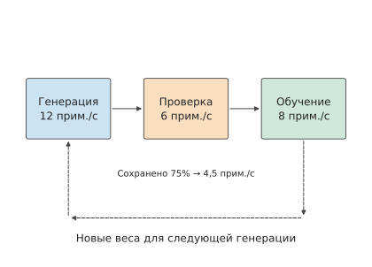
Рис. 10-37. Три этапа могут обрабатывать не более 12, 6 и 8 траекторий одинаковой длины в секунду соответственно. После проверки сохраняется 75%, поэтому на обучение поступает лишь 4,5 траектории/с. Обратная стрелка показывает, что новые веса, полученные при обучении, влияют на последующую генерацию; время их синхронизации рассматривается далее при разборе переключения этапов и асинхронного выполнения.
На рис. 10-37 три операции сначала показаны на отдельных ресурсах. Если вместо этого поочерёдно выполнять их на одном наборе ускорителей, можно уменьшить необходимое количество ускорителей, но между генерацией и обучением придётся переключать весь набор данных в видеопамяти.
Совместное использование ускорителей позволяет одному набору ускорителей поочерёдно выполнять обучение и генерацию, сокращая дублирование ресурсов; независимое развёртывание позволяет обеим сторонам работать независимо и перекрываться по времени, но требует передачи весов между двумя наборами ускорителей. Основные затраты при совместном использовании ускорителей возникают во время переключения: старое состояние ещё не освобождено, а загрузка нового уже началась. Видеопамяти может хватать для каждого этапа по отдельности, но при переключении одновременное размещение двух наборов данных способно превысить её объём.
Пусть совместно используемый ускоритель — H100 SXM с номинальными 80 GB, что соответствует приблизительно 74,5 GiB. Состояние обучения занимает 40 GiB видеопамяти, а для генерации требуется около 15,3 GiB весов BF16 и 24 GiB пула KV-кэша; ещё 4 GiB занимают общие накладные расходы двух этапов. При монопольном выполнении обучение занимает 44 GiB, а генерация — около 43,3 GiB, что в обоих случаях меньше 74,5 GiB. Если сначала восстановить веса генерации и KV, а затем освободить состояние обучения, пиковое потребление составит \(40+15.3+24+4\approx83.3\) GiB, превысив объём одной H100.
Изменим порядок: сначала загрузим необходимые для генерации веса, пока не выделяя KV. Пиковое потребление составит \(40+15.3+4\approx59.3\) GiB. Затем освободим 40 GiB состояния обучения, снизив потребление видеопамяти примерно до 19,3 GiB, после чего выделим KV и перейдём в состояние генерации, занимающее около 43,3 GiB. Конечное состояние обоих вариантов одинаково, но их пиковое потребление отличается на 24 GiB — ровно на размер одного пула KV.22
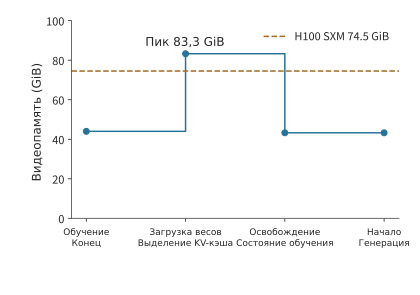
Рис. 10-38. Если сначала загрузить веса генерации и выделить пул KV, а затем освободить состояние обучения, пиковое потребление составит около 83,3 GiB, превысив доступные на H100 SXM 74,5 GiB. Горизонтальная ось соответствует порядку операций.
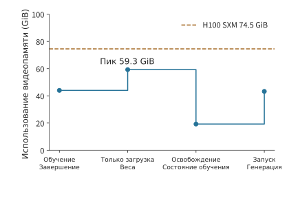
Рис. 10-39. Сначала загружаются веса генерации, затем освобождается состояние обучения и в конце выделяется пул KV. Пиковое потребление снижается примерно до 59,3 GiB; на обоих графиках используются общая линия ёмкости 74,5 GiB и одна вертикальная шкала.
Стоимость независимого развёртывания определяется объёмом передаваемых весов. Экспертные веса Qwen3-235B-A22B в формате BF16 занимают 423 GiB; при 16-кратном экспертном параллелизме (EP16) каждому получателю требуется лишь около 26,4 GiB. При последовательной отправке полного набора экспертов каждому из 16 получателей общий объём передачи составит \(16\times423=6768\) GiB; при отправке каждому только его сегмента — 423 GiB. Если сначала определить, какой сегмент параметров нужен каждому получателю, а затем организовать рассылку, можно одновременно уменьшить приёмный буфер и объём данных, отправляемых источником.
Здесь вновь используются два метода анализа из этой главы: при совместном использовании ускорителей необходимо анализировать жизненный цикл тензоров, а при независимом развёртывании — передачу данных и время обработки на каждом этапе. После разделения этапов также возникают различия между версиями стратегии; в следующем подразделе рассматривается, как они влияют на количество пригодных для обучения образцов.
При синхронизации весов существует ещё один тип весов с иным жизненным циклом: ускоритель фиксированных весов из раздела 4.7.3 способен обслуживать модели, веса которых длительное время не меняются в процессе RL. Например, если алгоритм использует фиксированную эталонную модель, её веса можно хранить в специализированном хранилище и многократно считывать; для постоянно обновляемой модели стратегии используется записываемое хранилище весов, а новые версии публикуются для стороны генерации. На рис. 10-40 пути весов показаны для этих двух жизненных циклов.
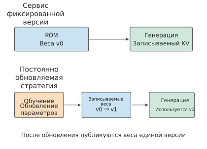
Рис. 10-40. Жизненный цикл весов сервиса с фиксированной версией и обучения стратегии. В верхней части ROM многократно предоставляет одну и ту же версию; в нижней части обучение создаёт новые версии и публикует их для стороны генерации. Для записи KV и обновления весов используются разные тракты данных.
10.5.3 Асинхронное обучение, версии стратегии и восстановление длинных траекторий¶
Независимое развёртывание из раздела 10.5.2 также позволяет чередовать работу над разными batch: пока сторона обучения обрабатывает предыдущую порцию образцов, сторона генерации уже начинает создавать следующую. Синхронный цикл, напротив, ожидает завершения обучения и синхронизации весов, прежде чем генерировать следующую порцию. Асинхронный цикл обеспечивает перекрытие генерации и обучения, но сторона генерации при этом может продолжать использовать старые веса. Чтобы вычислить вклад образца в обновление текущих параметров, необходимо сохранять вероятности стратегии, фактически использованной при сэмплировании.
После обновления весов задаваемая моделью стратегия также изменяется. Ниже в порядке движения образца выделены три версии стратегии.
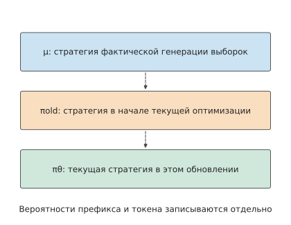
Рис. 10-41. μ создаёт обучающие образцы, πold обозначает начальную точку текущей оптимизации, а πθ изменяется по мере текущих обновлений. Пунктирная линия показывает порядок эволюции версий. Все три вероятности должны вычисляться для одного и того же префикса и одного и того же токена.
Обозначим фактическое поведенческое распределение через \(\mu\), стратегию в начальной точке текущей оптимизации — через \(\pi_{\mathrm{old}}\), а текущую оптимизируемую стратегию — через \(\pi_\theta\). Начальная стратегия обновляется вместе с итерациями оптимизации, тогда как эталонная модель, используемая для регуляризации с помощью дивергенции KL, остаётся фиксированной. Для одного и того же токена и префикса в позициях, где определены все три вероятности и знаменатель не равен нулю, отношение вероятностей удовлетворяет равенству
Первый множитель справа описывает изменение вероятности в результате текущей оптимизации параметров, второй — различие между фактическим распределением сэмплирования и начальной стратегией текущей итерации. В это различие могут входить отставание версии стратегии, различия конфигураций сэмплирования и вычислительные различия между движками. Если поведенческая и текущая стратегии дают для данного токена логарифмическую вероятность (logprob), равную \(-3\), итоговое отношение равно 1. Если вместо первоначально записанного значения поведенческой стратегии ошибочно использовать заново вычисленную логарифмическую вероятность \(-3.25\), отношение станет равно \(\exp(0.25)\approx1.28\). Параметры не изменились, но вес образца вырос примерно на 28%. Только сохранение поведенческой вероятности позволяет стороне обучения отличить изменение стратегии от вычислительных различий.24
Даже если синхронизировать веса перед каждой итерацией, второй множитель необязательно будет равен 1. Сторона генерации обычно выполняет декодирование последовательно по токенам и считывает KV-кэш, тогда как сторона обучения параллельно подаёт всю траекторию, заново вычисляет вероятности в каждой позиции токена, а затем выполняет обратное распространение. Разные реализации внимания, порядок редукции, форма batch, точность весов или KV могут приводить к различным logprob даже при одинаковых весах и префиксах. В разделе 5.2.4 уже измерялось одно из таких различий: при редукции одной и той же строки с разным количеством сегментов сумма квадратов различалась на 166 ULP, а количество сегментов зависело от текущего размера batch. Сначала расхождения между сторонами появляются в прямом проходе; обратный проход переносит различия функции потерь, сформированные прямым проходом обучения, в градиенты. Дискретная маршрутизация MoE дополнительно усиливает такие различия, что рассматривается в следующем подразделе.
Часть второго множителя также определяется конфигурацией сэмплирования: поведенческая вероятность вычисляется по фактически применённым правилам сэмплирования. Масштабирование температурой и усечение top-k или top-p изменяют исходное распределение Softmax модели, поэтому следует сохранять преобразованные вероятности и конфигурацию сэмплирования. Чтобы вычислить отношение вероятностей для одного и того же события, сторона обучения должна восстановить входные данные с соответствующими токенизацией, шаблоном диалога, номерами позиций, маской внимания и позициями EOS/усечения.
В обновлениях класса проксимальной оптимизации стратегии (PPO) отношение вероятностей определяет вес преимущества в градиенте и участвует в принятии решения об отсечении: если отношение отклоняется от 1 дальше заданного диапазона, его вклад в градиент ограничивается. Если ошибочно принять различия реализации за результат обновления параметров, вклад образца может быть необоснованно увеличен или уменьшен, а отсечение — сработать ошибочно; при использовании отношения вероятностей последовательностей различия logprob в отдельных позициях токенов также суммируются. Поэтому в более длинных траекториях накапливается больше вероятностных отклонений, из-за чего обновления легче становятся нестабильными.24
Взвешивание по значимости корректирует вклад уже выбранных событий с помощью отношения вероятностей, поэтому распределение сэмплирования должно охватывать целевые события. Токены, исключённые усечённым сэмплированием, невозможно вернуть с помощью отношений вероятностей уже имеющихся образцов; при слишком большом различии распределений дисперсия весов также возрастает. Отсечение позволяет ограничить экстремальные веса, но вносит смещение, причём раздельное отсечение двух множителей и отсечение итогового отношения дают разные функции потерь. Асинхронное выполнение увеличивает временной разрыв между версиями стратегии, поэтому далее доля пригодных образцов учитывается вместе с периодом выполнения при расчёте выигрыша.
Пример: насколько высокую долю устаревших образцов может выдержать асинхронный конвейер? Генерация одной порции занимает 40 s, обучение — 16 s, а блокирующая обе стороны синхронизация весов — 4 s, поэтому синхронный период составляет 60 s. Если генерация и обучение используют независимые ресурсы, но синхронизация весов по-прежнему монопольно занимает 4 s, асинхронный период в установившемся режиме равен \(\max(40,16)+4=44\) s.
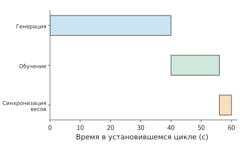
Рис. 10-42. Синхронный цикл последовательно генерирует текущую порцию образцов, обучается на ней и синхронизирует веса, затрачивая соответственно 40, 16 и 4 s, всего 60 s.
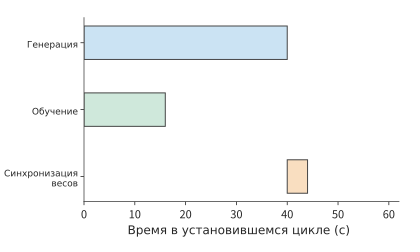
Рис. 10-43. В установившемся режиме генерация следующей порции перекрывается на независимых ресурсах с обучением на предыдущей; после завершения обоих этапов выполняется синхронизация весов, а период составляет 44 s. Оранжевый этап синхронизации блокирует обе стороны.
При переходе от синхронного выполнения на рис. 10-42 к асинхронному на рис. 10-43 сокращается время, в течение которого стороны обучения и генерации поочерёдно ожидают друг друга. Однако более ранняя генерация также означает, что образцы могли быть получены со старыми весами, поэтому необходимо вычесть отброшенные образцы.
Пусть изначально каждая порция содержит \(B\) эквивалентных траекторий, а после перехода к асинхронному выполнению для обучения сохраняется доля \(q\). Тогда эффективная пропускная способность синхронного и асинхронного выполнения равна соответственно \(B/60\) и \(qB/44\). Чтобы асинхронное выполнение было быстрее, необходимо условие
При \(q=0.8\) эффективная пропускная способность по образцам возрастает примерно на 9%; при \(q=0.7\), несмотря на более раннее завершение каждой порции, она, напротив, снижается примерно на 5%. Поэтому при расчёте выигрыша от асинхронного выполнения необходимо вычитать образцы, отброшенные из-за слишком старой версии стратегии.
Этап генерации на рисунке показан как один непрерывный отрезок работы. Чем длиннее траектория, тем вероятнее, что этот отрезок пересечётся с обновлением параметров или будет прерван, поэтому помимо отбора завершённых образцов необходимо решить, как продолжать незавершённые траектории. Длинные траектории также увеличивают временной разрыв между генерацией образца и его использованием для обучения. KV представляет собой результат выполнения префикса с заданными весами: при восстановлении с теми же весами сохранённый KV можно продолжить использовать, а после смены весов префикс необходимо выполнить заново, чтобы получить соответствующий KV. Для Qwen3-8B KV в формате BF16 при длине 8K занимает 1,125 GiB. Сохранение и загрузка KV-кэша требуют места в хранилище и времени на передачу, а его восстановление — повторного выполнения вычислений prefill. Поэтому варианты восстановления сравниваются по времени загрузки и времени повторного построения.
Если всегда отбрасывать прерванные траектории и выполнять сэмплирование заново, длинные траектории будут отбрасываться чаще из-за большего времени выполнения. Пусть интенсивность прерываний во время генерации равна \(\lambda\); тогда вероятность того, что траектория продолжительностью \(t\) будет полностью сгенерирована без прерывания, равна \(e^{-\lambda t}\). С ростом \(t\) доля данных, поступающих на обучение, уменьшается. Если для каждого токена записывать прогресс генерации и версию стратегии, после восстановления можно продолжить генерацию той же траектории и уменьшить вызванное системными прерываниями смещение по длине. Сохранение состояния траектории на сторонах модели и среды при прерываниях рассматривается в разделе 11.3.3.
Подход, при котором обучение и развёртывание используют один путь, уже применяется в реальных моделях. В DeepSeek V4.1 используемые при развёртывании механизмы разреженного доступа и восстановления включены в обучение. Разреженное внимание с самого начала обучения работает с последовательностями длиной 64K, а на этапе постобучения добавляется иерархическое ограничение кандидатов, благодаря чему при обучении и инференсе используется одна область поиска; обучение с учётом квантования, при котором во время обучения имитируется ошибка низкоточной квантизации, позволяет модели адаптироваться к основному KV в формате FP4; для восстановления состояния SWA декодера повторно воспроизводится лишь вход ограниченной длины, и этот процесс также моделируется на этапе постобучения. Благодаря этому модель учится использовать представления и локальные состояния, фактически предоставляемые путём развёртывания.29
10.5.4 Повторное воспроизведение экспертной маршрутизации и согласованность обучения и инференса¶
MoE превращает численные различия из раздела 10.5.3 в дискретные различия вычислительных путей: даже при одинаковых весах различия численных вычислений между сторонами генерации и обучения могут изменить выбор экспертов. Поскольку выбор экспертов дискретен, небольшое численное изменение способно направить токен по другому вычислительному пути. Например, при выборе двух экспертов с наибольшими оценками (top-2) из первых трёх экспертов с оценками 0,500, 0,301 и 0,300 будут выбраны эксперты 1 и 2; если из-за изменения порядка вычислений третья оценка станет равна 0,302, выбор изменится на экспертов 1 и 3. Очень небольшое изменение оценки может привести к использованию матрицы весов другого эксперта, а его влияние продолжит распространяться по последующим слоям.
Повторное воспроизведение маршрутизации (Routing Replay) записывает логические ID экспертов, выбранных при генерации, а во время обучения выбирает экспертов по этим ID, после чего вычисляет оценки маршрутизации, выходы экспертов и градиенты с текущими весами. Конкретная запись определяется совместно образцом, позицией токена и номером слоя. Благодаря этому генерация и обучение проходят через одинаковые дискретные пути экспертов, тогда как численные вычисления продолжают отражать текущие параметры.
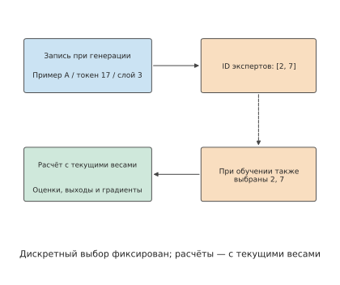
Рис. 10-44. Дискретные ID экспертов связывают стороны генерации и обучения, а текущие веса продолжают участвовать в численных вычислениях. На схеме показана запись выбора top-2 для образца A, токена 17 и слоя 3; пунктир обозначает повторное воспроизведение ID, сплошная линия — текущий поток вычисляемых данных.
Сначала вычислим объём такой записи. Для каждого из 48 слоёв Qwen3-30B-A3B записываются номера восьми экспертов с наибольшими оценками (top-8). Для 8 192 токенов при сохранении каждого ID эксперта в формате беззнакового целого uint16 размером 2 байта объём составляет
При использовании формата int32 размером 4 байта на целое объём составит 12 MiB. Записи также должны перемещаться вместе с токенами: упаковка последовательностей изменяет позиции токенов, разбиение контекста меняет ускоритель, на котором находится токен, а повторное вычисление снова считывает запись того же слоя. Чтобы сторона обучения могла выбрать исходную группу экспертов, ID должны проходить через все эти преобразования вместе с исходными позициями токенов.25
Пример: влияние повторного воспроизведения маршрутизации на ошибку вероятностей, время обучения и вознаграждение. В опубликованном NVIDIA отчёте о проверке повторного воспроизведения маршрутизации R3, то есть Rollout Routing Replay, представлены четыре контрольных сравнения с включённой и отключённой функцией, каждое с обучением в течение 100 шагов. После включения медиана записанной в журналах ошибки логарифмической вероятности снизилась во всех случаях, медиана общего времени шага немного выросла, а вознаграждение при обучении не демонстрировало стабильного улучшения. Повторное воспроизведение уменьшает различия маршрутизации, но сохранение записей и само воспроизведение увеличивают время выполнения. При сравнении двух вариантов следует отдельно оценивать ошибку вероятностей, время обучения и результаты на фиксированном наборе оценочных задач.25
При одинаковых весах и одной порции токенов различие logprob между сторонами генерации и обучения отражает влияние вычислительного пути и определения сэмплирования; ID экспертов MoE, в свою очередь, показывают, совпадает ли дискретная маршрутизация. Численная согласованность и степень отставания стратегии сэмплирования от текущей стратегии совместно влияют на количество эффективных обучающих образцов.
RL объединяет генерацию, проверку средой и обновление параметров в единый процесс обратной связи. Сторона генерации предоставляет вероятности сэмплирования и данные о выборе экспертов, сторона обучения использует эти данные для организации обновлений, а планировщик ресурсов организует перекрытие отдельных этапов. Сквозная передача этой информации позволяет одновременно оптимизировать передачу данных между этапами, согласованность выполнения и использование ресурсов. Примеры асинхронного периода и повторного воспроизведения маршрутизации в этом разделе количественно оценивают соответственно сокращение времени ожидания и дополнительные затраты на записи; весь цикл обратной связи в конечном счёте следует оценивать по эффективным образцам и прогрессу обучения.
10.6 От системного решения к сроку завершения и выбору оборудования¶
10.6.1 Сводный учёт ёмкости, времени шага, остановок и восстановления¶
Ниже приведён сводный расчёт времени выполнения задачи обучения из начала главы. Обе конфигурации обрабатывают 100B токенов, на каждом шаге — 384 последовательности по 8 192 токена, всего 31 790 итераций обучения. Пусть время обучения на одном шаге \(t_s\) уже включает вычисления на одной карте, ожидание коммуникации и ожидание входных данных, доля дополнительного времени на сохранение и восстановление равна \(L\), а плановые остановки — \(T_0\). Тогда используемая в этой главе модель первого порядка для времени завершения имеет вид
Все величины получены на разных уровнях анализа, проведённого в этой главе: анализ жизненного цикла тензоров позволяет проверить достаточность видеопамяти; анализ критического пути позволяет вычислить \(t_s\); модель checkpoint даёт \(L\); плановые остановки составляют \(T_0=5\) дней. Объединив эти результаты, можно сравнить время выполнения двух конфигураций; итоговые значения в таблице рассчитаны по неокруглённым данным.28
| Параметр конфигурации | Конфигурация с 32 картами | Конфигурация с 48 картами |
|---|---|---|
| Количество хостов с восемью картами | 4 | 6 |
| ZeRO-3 для всей группы, количество накоплений одной последовательности на карту | 12 | 8 |
| Расчётное потребление видеопамяти на карту / GiB | 13,8 | 12,5 |
| Доступная видеопамять на карту / GiB | 22 | 22 |
| Вычисления на одной карте за шаг / с | 78,3 | 52,2 |
| Время передачи ZeRO-3 за шаг (PCIe 4.0 x16) / с | 17,9 | 12,0 |
| Ожидание коммуникации за шаг / с | 0,08 | 0,08 |
| Ожидание входных данных за шаг / с | 0,5 | 0,5 |
| Время обучения за шаг, включая 0,5 с ожидания входных данных / с | 78,9 | 52,8 |
| Дополнительное время на сохранение, повторное выполнение и восстановление | 1,02% | 1,08% |
| Базовое время обучения / дней | 29,0 | 19,4 |
| С учётом сохранения, восстановления и резерва в 5 дней / дней | 34,3 | 24,6 |
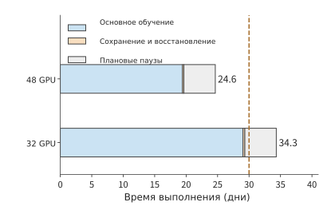
Рис. 10-45. Каждая горизонтальная полоса последовательно суммирует базовое время обучения, дополнительное время на сохранение и восстановление после сбоев, а также зарезервированные 5 дней плановых остановок. Базовое время обучения уже включает ожидание коммуникации и входных данных; небольшой оранжевый участок показывает дополнительные затраты времени, полученные из модели checkpoint. Обе конфигурации используют одну задачу и одинаковый глобальный батч, пунктирная линия обозначает срок в 30 дней.
На рис. 10-45 плановые остановки в обеих конфигурациях одинаковы, а сохранение и восстановление занимают лишь небольшую часть времени. Главное различие заключается в синем участке базового времени обучения: в конфигурации с 48 картами micro-batch распределяется для параллельной обработки между большим количеством карт, что значительно сокращает этот участок.
При данных условиях проектирования следует выбрать конфигурацию с 48 картами. Обе конфигурации удовлетворяют требованиям к ёмкости; конфигурация с 32 картами исключается, поскольку её время выполнения превышает 30 дней; конфигурация с 48 картами завершает работу приблизительно за 24,6 дня, оставляя около 5,4 дня. Основная ценность увеличения количества карт заключается в сокращении объёма работы, приходящегося на каждую карту, а дополнительные затраты из-за сбоев компенсируют лишь небольшую часть выигрыша.
10.6.2 Область применимости кластера из 4090¶
На рис. 10-45 показан запас приблизительно в 5,4 дня. Распределив этот запас по всем итерациям, можно определить допустимое дополнительное ожидание на каждом шаге и тем самым получить целевой показатель производительности для практической оптимизации. Время обучения на одном шаге для 48 карт должно удовлетворять условию
В этой конфигурации оно составляет приблизительно 52,8 с, оставляя запас около 14,4 с на шаг. Если зафиксировать время вычислений на одной карте на уровне около 52,2 с, а ожидание входных данных — 0,5 с, то суммарное ожидание коммуникации может составлять не более примерно 14,5 с; согласно анализу перекрытия из раздела 10.3.3, сейчас оно равно лишь приблизительно 0,08 с. Даже при полном отказе предварительной выборки, когда все 12,0 с передачи оказываются неперекрытыми, шаг занимает около 64,8 с и по-прежнему укладывается в предел.
Для 32 карт необходимо повысить эффективность вычислений на одной карте. После вычета затрат на восстановление, 0,08 с коммуникации и 0,5 с ожидания входных данных на вычисления одной карты остаётся около 66,7 с, тогда как при эффективности 40% требуется приблизительно 78,3 с. Для выполнения того же объёма работы эффективность вычислений на одной карте должна повыситься примерно до \(40\%\times78.3/66.7\approx47\%\), что уже превышает максимальные 43%, указанные для Llama 3. Таким образом, можно напрямую сравнить два направления улучшения: добавить два хоста либо повысить эффективность вычислений на существующих картах с 40% примерно до 47%.
Бюджет коммуникации необходимо также связать с физическими интерфейсами. Время передачи 12,0 с из раздела 10.3.3 рассчитано при наличии отдельной сетевой карты 200 Gbit/s для каждой карты. Если восемь карт одного хоста совместно используют единственную сетевую карту 200 Gbit/s, то ребро кольцевой коллективной коммуникации, входящее в этот хост и выходящее из него, должно нести всю нагрузку по приёму и передаче данных каждой карты — это разрез из примера 7.1 главы 7. При 48 картах через эту сетевую карту с пропускной способностью 25 GB/s за каждый шаг должно проходить около 385 GB, поэтому время передачи составит примерно 15,4 с и превысит предельный бюджет коммуникации в 14,5 с. Время передачи одного micro-batch составит около 1,92 с и останется меньше 6,53 с вычислений, поэтому при работающей предварительной выборке неперекрытыми по-прежнему будут только первая и последняя коммуникации; но при отказе предварительной выборки шаг займёт около 68,1 с, и конфигурация не уложится в срок. При отдельной сетевой карте на каждую карту даже полностью неперекрытые 12,0 с останутся в пределах бюджета. Разница между двумя конфигурациями заключается в следующем: общая сетевая карта ставит соблюдение срока в зависимость от перекрытия, а отдельная сетевая карта для каждой карты от него не зависит.
Таким образом, целевой показатель производительности связывается с конкретным процессом выполнения: на один шаг допускается не более 67,2 с, из которых вычисления занимают около 52,2 с, а оставшееся время отводится на коммуникацию и ожидание входных данных. При оптимизации прежде всего следует сокращать участок критического пути, выходящий за пределы бюджета; если видеопамяти уже достаточно для хранения необходимых тензоров, не нужно добавлять дополнительную работу ради её экономии.
10.6.3 Узкие места и выбор после замены оборудования¶
При замене ускорителя можно продолжить использовать бюджет из предыдущего подраздела, чтобы определить, какой участок сократится при ускорении вычислений и какой удлинится при снижении пропускной способности. Новый ускоритель одновременно изменит производительность вычислений на одной карте, ёмкость и межсоединение. Разделив исходное время шага на вычисления, ожидание коммуникации и другие составляющие, можно оценить ценность конкретного изменения оборудования. Пусть некоторый ресурс занимает долю \(f\) исходного времени шага, а его производительность изменяется в \(r\) раз при неизменных остальных процессах выполнения и зависимостях. Тогда
Это применение закона Амдала с учётом долей времени отдельных составляющих. Если из исходных 100 ms ожидание коммуникации занимает лишь 5 ms, то после двукратного снижения пропускной способности получится \(95+10=105\) ms; если же коммуникация изначально занимает 50 ms, то при таком же снижении получится \(50+100=150\) ms. Время выполнения первой задачи увеличивается на 5%, а второй — на 50%, поскольку исходные доли времени ожидания этого ресурса различаются в десять раз.
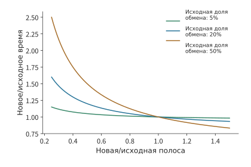
Рис. 10-46. Выигрыш от изменения производительности ресурса определяется исходной долей времени ожидания. Кривые рассчитаны по формуле \(T'/T=1-f+f/r\) при фиксированных вычислениях на одной карте и зависимостях; время коммуникации обратно пропорционально эффективной производительности.
В рассматриваемой в этой главе конфигурации с 48 картами неперекрытая коммуникация занимает лишь около 0,08 с, то есть приблизительно 0,14% времени шага. При двукратном снижении пропускной способности PCIe время передачи каждого micro-batch возрастает примерно до 3,0 с, но по-прежнему остаётся меньше 6,53 с вычислений; неперекрытая часть удваивается примерно до 0,15 с, а время шага увеличивается приблизительно с 52,8 до 52,9 с, то есть почти не изменяется. Если эффективность вычислений на одной карте снижается с 40% до 30%, время вычислений на одной карте возрастает примерно до 69,6 с, а вместе с коммуникацией и ожиданием входных данных — до 70,2 с, что превышает целевые 67,2 с. Для этой конфигурации соблюдение срока определяется эффективностью вычислений на одной карте; пропускная способность становится составляющей с большой долей \(f\) в формуле лишь при отказе предварительной выборки, когда весь участок коммуникации оказывается неперекрытым.
При сравнении A100, A800, H20 и других ускорителей их время вычислений на одной карте, время передачи через интерфейс и ёмкость можно подставить в тот же анализ. Для конфигураций, укладывающихся в срок, затем сравниваются затраты на аренду ускорителей, энергию и подготовку. Целесообразность покупки оборудования с более высоким отдельным показателем зависит от того, насколько оно позволяет сократить время выполнения или количество карт.
10.6.4 Чувствительность к масштабу модели, объёму данных и сроку¶
В предыдущих разделах модель оставалась неизменной, а сравнивались количество карт и модели ускорителей. Наконец, тот же метод можно распространить на масштаб модели и исследовать рост объёма вычислений при её увеличении. Используя приближённую формулу объёма вычислений плотной модели \(F=6ND\), фиксированный объём данных \(D=20\)T токенов, MFU 40% и доступный срок выполнения \(T\), получаем необходимое для соблюдения срока количество карт:
На рис. 10-47 срок в 90 дней представлен как граница количества карт. После выбора масштаба модели вычислительные ресурсы выше границы позволяют завершить работу с данной эффективностью, а ниже границы требуется повысить эффективность или увеличить срок.
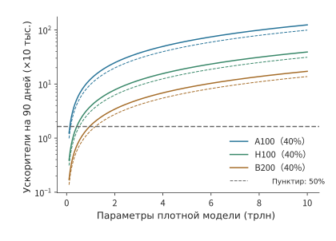
Рис. 10-47. При фиксированном сроке выполнения 90 дней увеличение размера плотной модели требует большего количества карт. Объём данных составляет 20T токенов, алгоритмический объём работы — \(6ND\), MFU сплошной линии равен 40%, пунктирной — 50%; используется пиковая производительность плотных матричных операций BF16. Все линии показывают непрерывную расчётную границу до округления вверх; горизонтальная линия обозначает 16 384 карты.
Для модели с 1T параметров 16 384 карты A100, H100 и B200 при MFU 40% потребуют соответственно около 679, 214 и 94 дней. При бюджете выполнения в 90 дней все три варианта оказываются ниже вычислительной границы: даже B200 превышает срок примерно на 4 дня, поэтому количество карт необходимо увеличить приблизительно до 17 147. Только при MFU 50% время для B200 снижается примерно до 75 дней и укладывается в срок, оставляя около 15 дней на плановые остановки и восстановление. Разница MFU в 10 процентных пунктов определяет, смогут ли 16 384 карты B200 обучить модель с 1T параметров за 90 дней.26
При фиксированном объёме данных пятикратное увеличение количества параметров модели приводит к пятикратному увеличению объёма вычислений; если объём данных одновременно задаётся как \(D=20N\), то \(F=120N^2\), и пятикратное увеличение количества параметров приводит уже к 25-кратному увеличению объёма вычислений. Ответ на вопрос о масштабе определяется совместно моделью и данными. Для MoE отдельно рассчитываются состояния всех обучаемых параметров и вычислительная работа активируемых путей, после чего обмен между экспертами включается в критический путь.
После завершения проектирования необходимо проверить, соответствует ли длительное выполнение ожиданиям. Публичные журналы обучения предоставляют окно наблюдения за длительным выполнением. Если обучение продолжается с checkpoint, количество новых токенов равно разности между итоговым накопленным значением и накопленным значением в точке восстановления; разделив объём новой работы на время текущего запуска, получаем соответствующую долгосрочную скорость. Эта скорость позволяет непосредственно проверить, способна ли вся система поддерживать заложенный в проект эффективный темп обучения.27
Если оглянуться на всю главу, рисунки с 10-10 по 10-14 объясняют, как данные занимают видеопамять и проходят по каналам передачи; рисунки с 10-17 по 10-36 показывают, как эти операции создают ожидание и влияют на длительное обучение; а рис. 10-45 объединяет все составляющие времени в итоговое время выполнения задачи из начала главы. Таким образом, размещение состояний, порядок выполнения и способ восстановления образуют единую задачу проектирования. RL изменяет источник работы на цикл обратной связи, но ресурсы и эффективный темп обучения по-прежнему сравниваются тем же методом. В следующей главе подробнее рассматривается, как эти задания и этапы совместно используют пул ресурсов.
Распространённые заблуждения¶
Заблуждение: если удвоить количество шардов, пиковое потребление видеопамяти при обучении уменьшится вдвое. Шардирование напрямую уменьшает только объём постоянно хранящегося на каждой карте состояния обучения. В примере с небольшой моделью он снижается с 18 MiB до 9 MiB, однако другие тензоры и буферы во время выполнения по-прежнему занимают около 21 MiB, поэтому пиковое потребление уменьшается лишь с 39 MiB до 30 MiB. Требования к объёму памяти определяются её суммарным потреблением в конкретный момент времени.
Заблуждение: если сократить время обработки коммуникаций, шаг обучения тоже станет короче. Суммарное время обработки трёх небольших буферов составляет около 4,59 ms — больше, чем 4,55 ms для одного общего буфера, однако их передачу можно выполнить в течение трёх отдельных периодов простоя вычислений. Увеличит ли коммуникация длительность шага обучения, определяется моментом её завершения.
Заблуждение: если вызов асинхронного сохранения вернулся, можно восстановить весь уже достигнутый прогресс. При сбое на отметке 50 s доступная точка восстановления зависит от того, какой снимок уже был зафиксирован. Одинаковая пауза основного процесса длительностью 1 s может привести к повторному выполнению 30 s или 10 s работы; разница определяется моментом завершения фоновой записи.
Заблуждение: повышение пропускной способности генерации ускоряет обучение с подкреплением (RL). Если генерируется 12 примеров/s, проверяется шесть примеров/s, а доля сохраняемых примеров составляет 75%, обучающая часть может получать лишь 4,5 траектории в секунду. Увеличение ресурсов генерации не устраняет узкое место на этапе проверки; только повышение пропускной способности проверки перенесёт ограничение на этап обучения.
Заблуждение: если удвоить количество карт и пропорционально увеличить размер батча, время выполнения сократится вдвое. После превышения критического размера батча количество шагов, необходимых для достижения того же значения функции потерь, перестаёт заметно уменьшаться. При масштабе градиентного шума в два миллиона токенов увеличение размера батча на шаг с 3,15 миллиона примерно до ста миллионов токенов (1536 карт) сокращает время выполнения лишь с 19,4 до 12,1 дня, а предельное ускорение составляет 1,64 раза. Увеличение размера батча ограничено масштабом градиентного шума; это ограничение не распространяется на сильное масштабирование, при котором размер батча остаётся неизменным, а увеличивается только количество карт.
Упражнения и эксперименты¶
Следующие десять задач последовательно переходят от базовых вычислений к анализу механизмов и комплексному проектированию. Все условия, необходимые для расчётных задач, приведены в основном тексте; экспериментальную часть следует выполнить по прилагаемым журналам или самостоятельно измеренным данным.
Упражнение 10-1 · Основы: шардирование состояния обучения и пиковая память на каждой карте
Замените градиенты в этой главе на FP32 и рассчитайте постоянно размещённое состояние обучения Qwen3-8B. Затем определите объём на каждой карте для ZeRO-1, ZeRO-2 и ZeRO-3 при восьми картах. Предположите, что во время выполнения используются 6 GiB активаций и два модульных буфера по 3 GiB каждый; отдельно рассчитайте пиковое потребление при одновременном размещении двух буферов в видеопамяти и при их последовательном переиспользовании.
Упражнение 10-2 · Основы: какая вычислительная эффективность одной карты необходима для завершения обучения в срок
Используйте задачу обучения из этой главы и задайте глобальный размер batch равным 384 последовательностям; рассчитайте бюджет времени на шаг для сроков 30 и 25 дней. Для 32 карт сначала по разделу 10.3.3 определите время передачи по каналу связи и открытую задержку ожидания коммуникации на каждом шаге ZeRO-3, затем добавьте 0,5 s ожидания входных данных. Сначала без учёта восстановления определите минимальную вычислительную эффективность одной карты, необходимую для завершения обучения за 25 дней; затем добавьте стоимость восстановления из этой главы. Наконец, примите масштаб шума градиента равным двум миллионам токенов и по формуле из раздела 10.1.1 определите верхнюю границу ускорения при слабом масштабировании, а также время завершения на 96 и 1536 картах при слабом и сильном масштабировании; повторно рассчитайте верхнюю границу, изменив масштаб шума до двадцати миллионов токенов.
Упражнение 10-3 · Комплексное проектирование: выбор схемы обучения с учётом ёмкости, срока и стоимости ускорителей
Сравните время завершения обучения и суммарное количество GPU·часов для схем с 32 и 48 картами. Увеличьте пиковую потребность активаций и временных буферов на каждом шаге с 10 GiB до 20 GiB и повторно оцените достаточность ёмкости. Если копия весов BF16 хранится в формате FP8 с блочным масштабированием из раздела 10.1.2, пересчитайте постоянно размещённое состояние и запас ёмкости на каждой карте для обеих схем. Если можно арендовать только четыре восьмикарточных хоста, отдельно рассчитайте, до какого уровня нужно сократить объём задачи, насколько продлить срок или до какого уровня повысить вычислительную эффективность, чтобы завершить обучение. В экспериментальной части выберите один из вариантов, выполните реальные измерения и замените заданные в этой главе параметры измеренными значениями.
Упражнение 10-4 · Анализ: как количество микробатчей и повторное вычисление активаций изменяют накладные расходы конвейера
Для модели с четырьмя стадиями, прямым проходом длительностью 10 ms и обратным проходом длительностью 20 ms определите идеальную утилизацию при 1, 4, 8 и 16 микробатчах. По рисунку 10-19 объясните, какая зависимость вызывает ожидание на интервале 93–95 ms. Затем для восьми микробатчей сравните чередующийся 1F1B (\(v=2\)) и расписание без пузырей (ZB-H1, \(T_B=T_W\)): по формулам пузырей из основного текста отдельно рассчитайте время пузырей, сопоставьте его с полученными событийной моделью временами завершения 298 ms и 283 ms и объясните, почему чередующаяся схема увеличивает количество передач через границы. Предположите, что восстанавливаемые произведения каждого слоя для каждого микробатча занимают 10 MiB. В исходной схеме для четырёх микробатчей ещё не выполнено обратное распространение, и для каждого микробатча необходимо сохранять эти произведения для девяти слоёв. Измените схему так, чтобы каждый раз восстанавливались произведения только одного микробатча для одного слоя и освобождались сразу после использования. Рассчитайте, на сколько меньше данных потребуется сохранять в новой схеме и какой объём рабочей области потребуется для последовательного послойного восстановления; затем обсудите, как изменится рабочая область при одновременном выполнении обратного распространения для двух слоёв.
Упражнение 10-5 · Анализ: сколько последовательностей нужно предварительно загрузить при остановке процесса подготовки данных
48 карт обрабатывают 384 последовательности за шаг, время одного шага обучения составляет около 52,8 s, а каждый из четырёх процессов подготовки данных подготавливает две последовательности в секунду. Если один процесс подготовки данных остановится на 60 s, рассчитайте по средней скорости потребления обучающей частью, сколько последовательностей необходимо предварительно накопить как минимум для сохранения исходной скорости обучения и сколько времени после восстановления всех четырёх процессов потребуется, чтобы вернуть очередь предвыборки к размеру до остановки. Затем для суммарной скорости записи хранилища 7 GB/s из раздела 10.4.3 определите минимальный интервал сохранения checkpoint размером около 115 GB, при котором не возникает очередь записи.
Упражнение 10-6 · Анализ: частота сохранения checkpoint и стоимость повторной работы после сбоя
Выведите оптимальный период сохранения по модели первого приближения из этой главы и рассчитайте временные издержки сохранения checkpoint и повторной работы после сбоев для задания на 1024 картах при интервалах сохранения 300, 900 и 1800 s. Добавьте общее прерывание, происходящее раз в сутки и одновременно затрагивающее всё задание, после чего повторно рассчитайте частоту сбоев и оптимальный период. Затем добавьте к модели для 48 карт откат из-за всплеска функции потерь, который в среднем происходит раз в семь дней и одновременно затрагивает всё задание, и повторно рассчитайте оптимальный период сохранения и долю дополнительного времени при интервале 600 s. В экспериментальной части внедрите сбои отдельно до и после фиксации сохранения, а затем сравните позиции восстановления и объём работы, которую потребуется выполнить повторно.
Упражнение 10-7 · Комплексное проектирование: соотношение этапов RL и пропускная способность эффективных выборок
Предположите, что скорости обработки на этапах генерации, проверки и обучения соответственно равны 12, 6 и 8 выборкам/s, а после проверки сохраняется 75% выборок; сравните эффект от удвоения производительности только одного этапа. Также используйте циклическую модель, в которой генерация занимает 40 s, обучение — 16 s, а синхронизация весов — 4 s. Предположив, что каждый batch содержит одно и то же постоянное количество сгенерированных выборок, отдельно рассчитайте пропускную способность эффективных выборок при асинхронном выполнении и долях сохранения 80% и 70%, а затем сравните её с синхронным выполнением без отбрасывания выборок; результат можно выразить как долю batch, обрабатываемую за секунду. В экспериментальной части отследите идентификатор одного batch выборок, вознаграждение, позиции, на которых учитывается функция потерь, и веса на принимающей стороне.
Упражнение 10-8 · Анализ: соответствие записей маршрутизации и выборок
Предположите, что последовательность содержит 8K токенов, модель состоит из 48 слоёв, а каждый слой выбирает для каждого токена 8 экспертов. Отдельно рассчитайте объём записей, необходимый для кодирования ID экспертов с помощью uint16 и int32. После упаковки двух последовательностей и последующего разбиения контекста на четыре части опишите, как ID экспертов переставляются вместе с токенами. Сконструируйте пример со смещённой позицией токена, объясните, как обучающая сторона использует ошибочного эксперта, и разработайте проверку для локализации этой ошибки.
Упражнение 10-9 · Анализ: как коммуникация, вычислительная эффективность и ожидание входных данных влияют на срок обучения
Для примера проектирования на 48 картах из этой главы отдельно уменьшите пропускную способность PCIe вдвое — для случаев эффективной и полностью неработающей предвыборки, — снизьте вычислительную эффективность одной карты до 30% и увеличьте ожидание входных данных до 5 s; повторно рассчитайте время завершения обучения и определите, удастся ли уложиться в срок. Затем добавьте к вычислительному времени каждой карты независимые колебания со стандартным отклонением 5%, определите ожидаемую длительность шага на 48 картах и проверьте, по-прежнему ли схема укладывается в срок. Предположите, что все указанные ухудшения происходят одновременно, а дополнительные ресурсы позволяют восстановить до исходного значения только один параметр; сравните, насколько сокращается время критического пути при восстановлении каждого из параметров. Затем выберите спецификацию оборудования или журнал выполнения и замените одно из заданных в этой главе входных значений числом с указанным источником.
Упражнение 10-10 · Комплексное проектирование: сколько ускорителей и какие затраты необходимы для соблюдения срока обучения
Для плотных моделей с количеством параметров 1T, 5T и 10T рассчитайте по формуле \(6ND\) объём вычислений обучения для двух масштабов данных: объём обучающих данных фиксирован и равен 20T токенов; количество обучающих токенов удовлетворяет условию \(D=20N\). Затем для MFU 40% и 50% определите минимальное количество карт A100, H100 и B200, необходимое в каждом случае для завершения обучения за 90 и 180 дней. Сравните два укладывающихся в срок варианта по суммарному количеству GPU·часов и объясните, как время подготовки и параметры восстановления изменяют вывод. В экспериментальной части выберите общедоступный журнал с указанной точкой восстановления, вычтите количество токенов, уже обработанных к моменту восстановления, и рассчитайте среднюю скорость обработки новых обучающих токенов за наблюдаемый период.
Итоги главы¶
Объём памяти, необходимый для обучения, совместно определяется форматом хранения состояний, способом их распределения между картами и жизненным циклом. ZeRO уменьшает дублирование состояний, повторные вычисления сокращают объём данных, которые необходимо хранить между прямым и обратным проходами, а выгрузка переносит временно неиспользуемые состояния обучения в оперативную память хоста; все три подхода освобождают видеопамять ценой дополнительных вычислений или передачи данных. Во время выполнения момент начала определяется одновременно готовностью данных и доступностью ресурсов, а время каждого шага — задержкой, накопленной вдоль цепочки зависимостей вплоть до завершения обновления параметров.
При оценке общего времени до завершения необходимо также учитывать время подготовки данных, сохранения checkpoint и повторного выполнения после сбоев, не включённое во время шага. Checkpoint сохраняет как состояние оптимизатора, так и позицию уже обработанных обучающих данных; период сохранения обеспечивает баланс между затратами на запись при нормальной работе и затратами на повторное выполнение после сбоя. На синхронное обучение также влияют три практических фактора: возможность увеличивать batch size пропорционально числу карт определяется критическим batch size, время каждого шага определяется самой медленной картой, а частота откатов из-за всплесков функции потерь включается в модель периода сохранения вместе с частотой аппаратных сбоев. RL дополнительно требует отслеживать идентификаторы примеров, версии политики и вероятности действий согласно поведенческой политике, а также согласовывать пути численных вычислений при генерации и обучении. При онлайн-сэмплировании данные изменяются вслед за политикой, OPD распространяет учительский надзор на префиксы, фактически сгенерированные учеником, а выполнение в разных движках требует обеспечения согласованности обучения и инференса. После контроля смещения распределения данных и ошибок выполнения можно на основе пропускной способности по эффективным примерам и оценки задачи определить, насколько перекрытие этапов ускоряет обучение.
В рассмотренном в этой главе примере проектирования конфигурации с 32 и 48 картами RTX 4090 способны вместить состояния обучения, но при одинаковой цели обучения и эффективности выполнения время до завершения составляет примерно 34,3 и 24,6 дня соответственно. Конфигурация с 48 картами укладывается в срок 30 дней, а верхний предел времени одного шага обучения составляет примерно 67,2 s; бо́льшая часть времени передачи данных ZeRO-3, составляющего 12,0 s на шаг, перекрывается вычислениями, но даже при полном отсутствии перекрытия этот предел не будет превышен. Этот вывод получен последовательным анализом ёмкости, выполнения и восстановления; та же аналитическая модель также даёт критические значения, позволяющие определить, можно ли завершить обучение по выбранной схеме в срок при изменении эффективности, характеристик коммуникации и сбоев.
-
Доктор Ляо Хэн, главный учёный Huawei по полупроводниковым технологиям, Nested Parallel von Neumann Architecture and Nested BSP, arXiv:2609.16787, 15 сентября 2026 года. Раздел 2 и рисунок 1 помещают FSDP в иерархию вложенного параллелизма DP, PP, EP, CP и TP; здесь это используется для пояснения различий между шардированием состояния и активаций. ↩
-
Перерасчёт критического размера batch и сравнение для масштаба шума в двадцать миллионов токенов. Определение масштаба шума градиента приведено в формуле (2.8) из эмпирической модели обучения с большими batch; зависимость между количеством шагов и выборок из формулы (5.1), определение критического размера batch из формулы (5.2) и диапазон примерно от одного до двух миллионов токенов при сходимости приведены в статье о законах масштабирования. \(B_{\mathrm{noise}}\) — принятое для этого примера значение, которое не измерялось на модели из этой главы; ни слабое, ни сильное масштабирование не учитывают изменение эффективности распараллеливания. ↩↩
-
Статья об обучении со смешанной точностью — механизм масштабирования функции потерь, коэффициенты масштабирования от 8 до 32K и представимый диапазон FP16; статья о форматах FP8 — кодирование E4M3/E5M2 и максимальное нормальное число; технический отчёт DeepSeek-V3, §3.3 — блочное масштабирование активаций блоками 1×128 и весов блоками 128×128, перевод каждых 128 элементов в FP32 для накопления и относительная ошибка функции потерь менее 0,25%. Сравнение экспоненты и мантиссы FP16 и BF16 см. в разделе 4.6.1. ↩↩
-
Событийная модель чередующегося расписания, событийная модель без пузырей, событийная модель DualPipe и варианты с шестнадцатью микробатчами: чередующийся, без пузырей, DualPipe. Формулы пузырей: для 1F1B и чередующегося расписания см. статью Megatron-LM — \((p-1)/m\) и \((1/v)(p-1)/m\); для ZB-H1/H2 см. таблицу 2 статьи о нулевых пузырях; количество параметров и экземпляров активаций DualPipe см. в таблице 2 технического отчёта DeepSeek-V3; определение установившегося режима 1F1B см. в PipeDream. Расписание без пузырей построено по порядку слотов ZB-H1 из верхней части рисунка 3 статьи; архивные тексты о чередующемся расписании и DualPipe описывают только идеи разбиения на блоки и двунаправленной подачи, поэтому порядок слотов задан согласно declared_schedule_rule, записанному в соответствующих файлах результатов; соотношение разбиения \(T_B=T_W=10\) ms принято для этого примера; время завершения выведено событийной моделью из зависимостей, а не измерено. ↩↩
-
Перерасчёт коэффициента ёмкости и отбрасывания. Правило ёмкости приведено в формуле (3) Switch Transformer — ёмкость каждого эксперта = количество токенов в каждом batch / количество экспертов × коэффициент ёмкости — и в GShard, где ёмкость имеет порядок O(N/E), а представление переполнившихся токенов передаётся следующему слою через residual connection; балансировка смещением без вспомогательной функции потерь описана в техническом отчёте DeepSeek-V3. Распределение, при котором половина экспертов нагружена в 1,5 раза сильнее, принято для этого примера и, как и пример 96/32 в основном тексте, соответствует соотношению 3:1. ↩↩
-
Общая стоимость и причины сбоев см. в техническом отчёте MiMo-V2.6, §4.1 и §5.5. Длительность отдельных событий, тарифы и объявления об откатах приведены в архивном журнале, процесс вычислений — в заметках по примеру и записи перерасчёта. Сумма оценена умножением интервалов событий из журнала на фиксированный тариф с панели, а не взята из отдельного счёта за сбои в отчёте; повторная работа, обнаружение и ожидание внутри интервалов не разделялись, а потенциально переиспользуемые результаты выборки не вычитались. ↩
-
Модель максимума отстающих исполнителей, где σ составляет 2% среднего, и вариант, где σ составляет 5% среднего. Заметное замедление примерно 0,5% машин отмечено в MegaScale; среднее время без сбоев составляет 7,9 часа для задания на 1024 картах и 47,7 дня для задания на 8 картах согласно статье о надёжности кластера Meta, а частота сбоев одной карты в разделе о периоде сохранения пересчитана из 7,9 часа для 1024 карт. Стандартное отклонение вычислительного времени каждой карты и интервал отката из-за всплеска функции потерь приняты для этого примера; математическое ожидание максимума получено численным интегрированием порядковой статистики без моделирования корреляции, периодического дрожания или устойчиво медленных карт. ↩↩↩↩
-
Перерасчёт официального количества параметров и состояния Adam/ZeRO; вариант с градиентами FP32. В этой главе используется заданное представление состояния из пяти компонентов; для других оптимизаторов и состояний пониженной точности требуются отдельные расчёты. ↩
-
Срок обучения и нижняя граница количества устройств, а также варианты календарного времени. Источники данных о точности, разреженности и оборудовании поэлементно записаны в JSON. Значения MFU 38–43% для BF16 приведены в отчёте Llama 3, §3.3.2 и таблица 4; PCIe 4.0 и отсутствие NVLink у RTX 4090 указаны на странице спецификаций RTX 4090. ↩↩
-
Журнал четырёх конфигураций CPU FSDP2. Параметры малой CPU-модели во всех четырёх конфигурациях совпали с нешардированным эталоном; пиковый объём памяти, выделенной во время обучения, составил 39,16/30,14 MiB. ↩
-
Событийная модель заполнения и опустошения, событийная модель 1F1B, зависимости сохранения входных тензоров GEMM, выборочное повторное вычисление. Для входных данных GEMM используется эталонное представление FP32; восстанавливаемые произведения девяти слоёв занимают 90 MiB, а максимальная рабочая область для послойного восстановления — 6 MiB. На схеме конвейера показаны промежуточные результаты, сохраняемые стратегией save_nonlinear, и их буферы отправки и приёма. ↩↩
-
Перерасчёт преобразования градиентов, вариант с быстрым каналом связи, разбор SuperOffload и пример преобразования, журнал выгрузки CPUAdam. Путь преобразования начинается с момента готовности градиентов на GPU и заканчивается, когда градиенты FP32 становятся доступны CPU для чтения; оба пути используют закреплённую память хоста в качестве буфера. Для пропускной способности преобразования на GPU принято значение 1008 GB/s, соответствующее пропускной способности видеопамяти RTX 4090 (calculations/configs/hardware.json); для CPU принято значение восьмиканальной DDR5-4800 из спецификации Intel Xeon Platinum 8480+: \(8\times4800\ \mathrm{MT/s}\times8\) B \(=307.2\) GB/s. Оба значения являются верхними границами, рассчитанными по пропускной способности памяти. Значение 450 GB/s в каждом направлении для NVLink-C2C приведено в описании архитектуры GH200. ↩
-
В статье указана длительность шага 23,66/6,34 s и эффективность масштабирования около 93,3%; это эксперимент по масштабированию всей системы при фиксированном глобальном размере batch. См. официальную статью MegaScale и заметки о фиксированной задаче, исторической конфигурации и измерениях. ↩
-
Технический отчёт DeepSeek-V3, пример обмена экспертами и обратной группировки по блокам. Разбиение 72 MiB на три блока, кольцевой AllReduce с четырьмя участниками, время запуска 0,02 ms и три промежутка по 2 ms являются заданными входными данными; конфигурация с одной сетевой картой 200 Gbit/s на каждую GPU приведена в анализе конфигурации кластера 4090, а 400 Gbit/s — в спецификации ConnectX-7. Балансировка экспертов и механизм маршрутизации описаны в DeepSeek-V3, планирование по блокам — в примере по ссылке. ↩
-
Модель ввода обучающих данных и общего хранилища, эксперимент совместной работы ввода и сохранения. Событийная модель на параметрах малого масштаба демонстрирует, как очередь предвыборки опустошается, когда checkpoint и входные данные используют общее хранилище; в примере проектирования из этой главы используются четыре процесса подготовки данных, каждый из которых подготавливает по две последовательности/s. ↩
-
Разбор структуры checkpoint, ByteCheckpoint и фонового сохранения, расчёт логического перешардирования, временная шкала для 112 GB. ↩
-
Журнал восстановления DCP, восстановление реального текстового конвейера. 2 000 + 6 192 — учебный пример количества токенов, оставшихся при упаковке. Малая модель DCP восстановила две части со строчным шардированием в три части со столбцовым шардированием и полное состояние; параметры, Adam, случайное состояние и результат следующего обновления параметров совпали с непрерывным обучением. ↩
-
Эксперимент с асинхронным сохранением и сбоем до фиксации, а также сравнение без сохранения, с синхронным и асинхронным сохранением. В исходном нормальном пути вызов API занимал около 7,25 ms, а фиксация метаданных — около 48,30 ms; в эксперименте со сбоем перед фиксацией устанавливался барьер, после чего процесс завершался. ↩
-
Период сохранения и пуассоновская модель повторных попыток. Точный объём данных равен 114 670 295 040 bytes, а стоимость сохранения при скорости записи 7 GB/s составляет около 16,381 s; оптимум первого приближения равен примерно 965,29 s, а для пуассоновской модели повторных попыток со сбоями во время сохранения — примерно 954,40 s. Значение 7 GB/s соответствует суммарной скорости записи одного SU для уровня Good из таблицы 6 эталонной архитектуры DGX SuperPOD; среднее время до прерывания задания на 1024 картах составляет 7,9 часа, а обратная пропорциональность среднего времени без сбоев количеству карт приведена в статье о надёжности кластера Meta. Для выбора в этой главе достаточно различать интервалы в пять, пятнадцать и тридцать минут. ↩
-
Реальный замкнутый цикл фиксированной малой модели verl, проверка исходного кода функции потерь и обновления. В фиксированной конфигурации обучения Qwen2.5-0.5B-Instruct используется одна карта, NO_SHARD и no_sync=False; исходный код и зафиксированные версии приведены в журнале по ссылке. Значения 0,32/0,30/0,04 выведены на основе реальной структуры длин и учебного скалярного значения функции потерь. ↩↩↩
-
Пиковое потребление общего устройства Qwen3-8B, синхронизация шардированных весов Qwen3-235B-A22B. 40 GiB — заданное потребление видеопамяти после шардирования/выгрузки; два пиковых значения при переключении составляют примерно 83,256/59,256 GiB и сравниваются с номинальными 80 GB (74,506 GiB) H100 SXM. ↩
-
Технический отчёт DeepSeek V4, §5.1 о доменных экспертах и OPD с несколькими учителями; распределение работы по этапам см. в главе 3. ↩
-
Состояние RL, отношение вероятностей и версии, технический отчёт DeepSeek V4. ↩↩
-
Бюджет метаданных маршрутизации, опубликованные авторами R3 журналы и анализ. В четырёх парах настроек используется общий seed42; reward является метрикой обучающего batch, а logprob — статистикой уровня журнала от авторов R3. ↩↩
-
Масштаб плотных моделей и сроки, вариант с ростом объёма данных пропорционально количеству параметров. Значение MFU 41% для BF16 при 16 384 картах H100, DP=128 и последовательностях 8K приведено в таблице 4 отчёта Llama 3. ↩
-
Проверка исходного журнала обучения SmolLM3. Журнал SmolLM3 содержит этапы с 384, 288 и 192 rank; после последнего восстановления фактически было выполнено 14 000 шагов, а итоговое накопленное количество токенов включает ранее выполненную работу. ↩
-
Входные данные, выводы и перерасчёты примера проектирования из этой главы. Запасы ёмкости, ожидание входных данных и плановые остановки для 32/48 карт являются заданными входными данными; вычислительная эффективность одной карты взята из MFU Llama 3; объём матричных вычислений модели получен из существующего расчёта training-deadline, а объём коммуникации ZeRO-3 выведен из той же таблицы параметров. PCIe 4.0 и отсутствие NVLink у RTX 4090 указаны на странице спецификаций RTX 4090; отсутствие поддержки P2P между картами и конфигурация восьмикарточного хоста с восемью сетевыми картами по 200 Gbit/s приведены в анализе конфигурации кластера 4090; согласно §3.2 MegaScale, в пределах одного шага невозможно скрыть только первый AllGather и последний ReduceScatter. Значения по отдельным компонентам и независимые перерасчёты сохранены в design-case.json. ↩↩↩↩
-
Официальный технический отчёт DeepSeek V4.1, разделы 1, 2, 3 и 6; фиксированные условия и перерасчёты сквозного межглавного примера. ↩